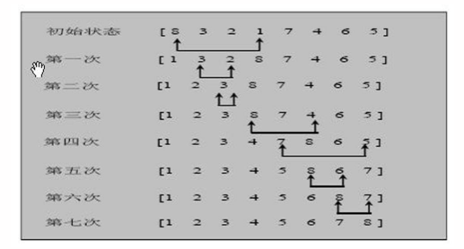
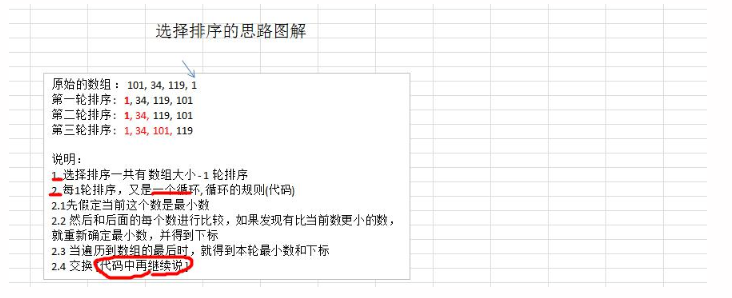
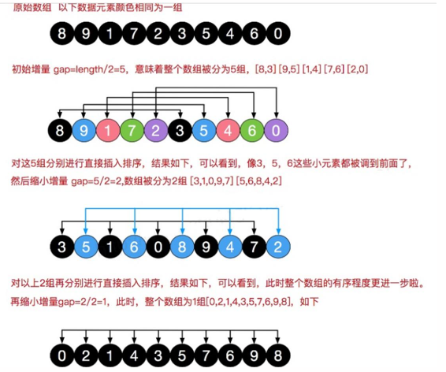
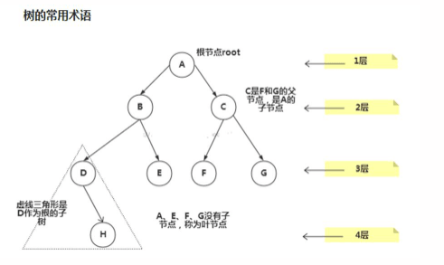
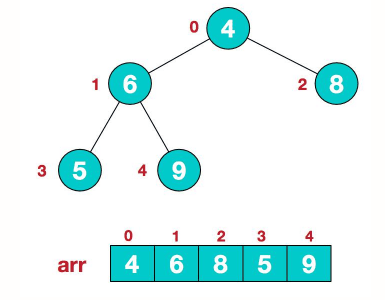
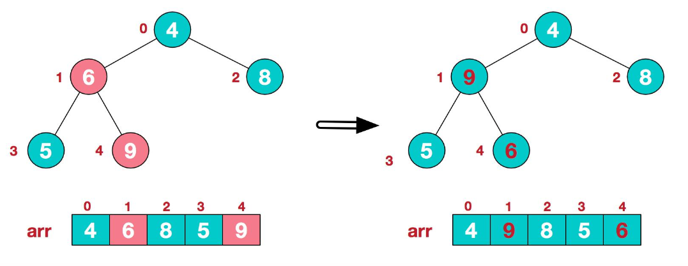
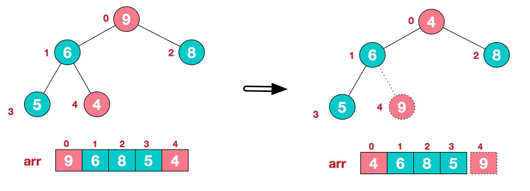
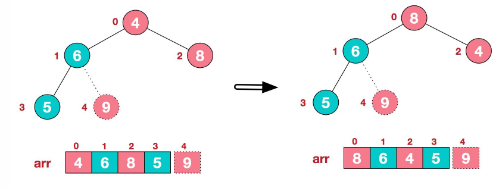
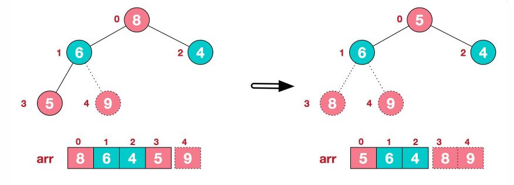
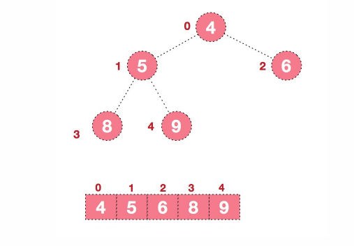

数据结构和算法
一、数据结构和算法内容介绍
1.1 几个经典算法面试题
- 字符串匹配问题：
1)有一个字符串 str1= ""硅硅谷 尚硅谷你尚硅 尚硅谷你尚硅谷你尚硅你好""，和一个子串 str2="尚硅谷你尚硅你"
2)现在要判断 str1 是否含有 str2, 如果存在，就返回第一次出现的位置, 如果没有，则返回-1
3)要求用最快的速度来完成匹配
4)你的思路是什么？
暴力匹配（简单，但是效率低）
KMP算法《部分匹配表》
- 汉诺塔游戏,
请完成汉诺塔游戏的代码: 要求：1) 将A塔的所有圆盘移动到C塔。并且规定，在2) 小圆盘上不能放大圆盘，3)在三根柱子之间一次只能移动一个圆盘
请完成汉诺塔游戏的代码: 要求：1) 将A塔的所有圆盘移动到C塔。并且规定，在2) 小圆盘上不能放大圆盘，3)在三根柱子之间一次只能移动一个圆盘

使用分治算法
- 八皇后问题：
八皇后问题，是一个古老而著名的问题，是回溯算法的典型案例。该问题是国际西洋棋棋手马克斯·贝瑟尔于1848年提出：在8×8格的国际象棋上摆放八个皇后，使其不能互相攻击，即：任意两个皇后都不能处于同一行、同一列或同一斜线上，问有多少种摆法。【92】

使用到回溯算法
- 马踏棋盘算法：
马踏棋盘算法介绍和游戏演示
1)马踏棋盘算法也被称为骑士周游问题
2)将马随机放在国际象棋的8×8棋盘Board[0～7][0～7]的某个方格中，马按走棋规则(马走日字)进行移动。要求每个方格只进入一次，走遍棋盘上全部64个方格
3)会使用到图的深度优化遍历算法(DFS) + 贪心算法优化

二、数据结构和算法概述
2.1 数据结构和算法的关系
- 数据(data)结构(structure)是一门研究组织数据方式的学科，有了编程语言也就有了数据结构.学好数据结构可以编写出更加漂亮,更加有效率的代码。
- 要学习好数据结构就要多多考虑如何将生活中遇到的问题,用程序去实现解决.
- 程序 = 数据结构 + 算法
- 数据结构是算法的基础, 换言之，想要学好算法，需要把数据结构学到位。
2.2 几个十一编程中遇到的问题
- 字符串替换问题

小结：需要使用单链表
- 五子棋程序

如何判断游戏的输赢，并可以完成存盘退出和继续上局的功能
棋盘 二维数组=>(稀疏数组)-> 写入文件 【存档功能】
读取文件-》稀疏数组-》二维数组 -》 棋盘 【接上局】
-
约瑟夫(Josephu)问题(丢手帕问题)
-
Josephu 问题为：设编号为1，2，… n的n个人围坐一圈，约定编号为k（1<=k<=n）的人从1开始报数，数到m 的那个人出列，它的下一位又从1开始报数，数到m的那个人又出列，依次类推，直到所有人出列为止，由此产生一个出队编号的序列。
-
提示：用一个不带头结点的循环链表来处理Josephu 问题：先构成一个有n个结点的单循环链表（单向环形链表），然后由k结点起从1开始计数，计到m时，对应结点从链表中删除，然后再从被删除结点的下一个结点又从1开始计数，直到最后一个结点从链表中删除算法结束。
-
小结：完成约瑟夫问题，需要用到单向环形链表这个数据结构
-
其他常见算法问题：

- 修路问题 => 最小生成树(加权值)【数据结构】+ 普利姆算法
- 最短路径问题 => 图+弗洛伊德算法
- 汉诺塔 => 分支算法
- 八皇后问题 => 回溯法
2.3 线性结构和非线性结构
- 线性结构：
- 线性结构作为最常用的数据结构，其特点是数据元素之间存在一对一的线性关系
- 线性结构有两种不同的存储结构，即顺序存储结构和链式存储结构。顺序存储的线性表称为顺序表，顺序表中的存储元素是连续的
- 链式存储的线性表称为链表，链表中的存储元素不一定是连续的，元素节点中存放数据元素以及相邻元素的地址信息
-
线性结构常见的有：数组、队列、链表和栈
-
非线性结构：
- 非线性结构包括：二维数组，多维数组，广义表，树结构，图结构
三、稀疏数组和队列
3.1 稀疏sparsearray数组
-

-
基本介绍：
-
当一个数组中大部分元素为0，或者为同一个值的数组时，可以使用稀疏数组来保存该数组
-
稀疏数组的处理方法：
- 记录数组一共有几行几列，有多少个不同的值
- 把具有不同值的元素的行列及值记录在一个小规模的数组中，从而缩小程序的规模
-
举例说明：

-
应用实例：
-
使用稀疏数组，保留类似前面的二维数组（棋盘、地图等）
-
把稀疏数组存盘，并且可以重新恢复原来的二维数组

-
二维数组 转 稀疏数组的思路：
- 遍历原始的二维数组，得到有效数据的个数 sum
- 根据sum就可以创建稀疏数组sparseArr int[sum+1] [3]
- 将二维数组的有效数据存入到稀疏数组
-
稀疏数组 转 原始二维数组：
- 先读取稀疏数组的第一行，根据第一行的数据，创建原始的二维数组，比如上面的chessArr = int [11] [11]
- 再读取稀疏数组后几行的数据，并赋值给原始的二维数组
代码如下：
/**
* 稀疏数组
* 使用稀疏数组，保留类似前面的二维数组（棋盘、地图等）
* 把稀疏数组存盘，并且可以重新恢复原来的二维数组
*/
public class SparseArr {
public static void main(String[] args) {
//1表示黑子，2表示蓝子，0表示无棋子
int[][] chessArr1 = new int[11][11];
chessArr1[1][2] = 1;
chessArr1[2][3] = 2;
/**
* 二维数组 转 稀疏数组
* 1. 遍历原始的二维数组，得到有效数据的个数 sum
* 2. 根据sum就可以创建稀疏数组sparseArr int[sum+1] [3]
* 3. 将二维数组的有效数据存入到稀疏数组
*/
int sum = 0;
for (int[] arr : chessArr1) {
for (int item : arr) {
System.out.printf("%d\t", item);
if (item != 0) {
sum++;
}
}
System.out.println();
}
System.out.println(sum);
//创建稀疏数组
int[][] sparseArr = new int[sum + 1][3];
sparseArr[0][0] = chessArr1.length;
sparseArr[0][1] = chessArr1[0].length;
sparseArr[0][2] = sum;
//将原始数组非0数据存入稀疏数组中
int count = 0;
for (int i = 0; i < chessArr1.length; i++) {
for (int j = 0; j < chessArr1[i].length; j++) {
if (chessArr1[i][j] != 0) {
count++;
sparseArr[count][0] = i;
sparseArr[count][1] = j;
sparseArr[count][2] = chessArr1[i][j];
}
}
}
System.out.println();
System.out.println("稀疏数组===========");
for (int[] arr : sparseArr) {
for (int item : arr) {
System.out.printf("%d\t", item);
}
System.out.println();
}
/**
* 用BufferedWriter写入稀疏数组到磁盘中
*/
BufferedWriter writer = null;
try {
writer = new BufferedWriter(new FileWriter("data-structure/src/sparsearr/map.data"));
for (int[] ints : sparseArr) {
String str = ints[0] + " " + ints[1] + " " + ints[2] + "\n";
writer.write(str);
}
writer.flush();
} catch (IOException e) {
throw new RuntimeException(e);
} finally {
if (writer != null) {
try {
writer.close();
} catch (IOException e) {
throw new RuntimeException(e);
}
}
}
/**
* 将稀疏数组还原成二维数组
* 1. 先读取稀疏数组的第一行，根据第一行的数据，创建原始的二维数组，比如上面的chessArr = int [11] [11]
* 2. 再读取稀疏数组后几行的数据，并赋值给原始的二维数组
*/
/**
* 用BufferedReader读取sparse.data中的数据
*/
BufferedReader reader = null;
int[][] chessArr2 = null;
try {
reader = new BufferedReader(new FileReader("data-structure/src/sparsearr/map.data"));
//将第一行数据读取出来，并且分割
String[] temp = reader.readLine().split(" ");
chessArr2 = new int[Integer.parseInt(temp[0])][Integer.parseInt(temp[1])];
String str;
//从第二行开始读取，
while ((str = reader.readLine()) != null) {
/**
* 将读取到的数据分割后得到String数组
* temp[0]就是原数组有效数据的行数，temp[1]就是原数组有效数据的列数，temp[2]就是有效数据的数值
*/
temp = str.split(" ");
chessArr2[Integer.parseInt(temp[0])][Integer.parseInt(temp[1])] = Integer.parseInt(temp[2]);
}
} catch (IOException e) {
throw new RuntimeException(e);
} finally {
if (reader != null) {
try {
reader.close();
} catch (IOException e) {
throw new RuntimeException(e);
}
}
}
System.out.println();
System.out.println("恢复后的二维数组=========");
for (int[] arr : chessArr2) {
for (int item : arr) {
System.out.printf("%d\t", item);
}
System.out.println();
}
}
}
3.2 队列
使用场景：银行排队的案例

队列介绍：
-
队列是一个有序队列，可以用数组或是链表来实现
-
遵循先入先出的原则。即：先存入队列的数据，要先取出。后存入的要后取出

3.2.1 数组模拟队列思路：
-
队列本身是有序队列，若使用数组的结构来存储队列的数据，则队列数组的声明如下图，其中maxSize是该队列的最大容量
-
因为队列的输出、输入是分别从前后端来处理，因此需要两个变量front以及rear分别记录队列前后端的下标，front会随着数据输出而改变，而rear则是随着数据的输入而改变，如图：

-
当我们将数据存入队列时称为“addQueue”，addQueue的处理需要有两个步骤：
-
将尾指针往后移：rear+1，当front==rear [空]
-
若尾指针rear小于队列的最大下标maxSize-1，则将数据存入rear所指的数组元素中，否则无法存入数据。
rear==maxSize-1 [队列满]
代码如下：
public class ArrayQueue {
private final int maxSize; //数组的最大容量
private int front; //指向数组的头部
private int rear; //指向数组的尾部
private final int[] arr; //用于存放数据，模拟队列
public ArrayQueue(int maxSize) {
this.maxSize = maxSize;
front = -1; //指向头部，初始化队列，无数据
rear = -1; //指向尾部
arr = new int[maxSize];
}
/**
* 判断队列是否满
*/
public boolean isFull() {
return rear == maxSize - 1;
}
/**
* 判断队列是否为空
*/
public boolean isEmpty() {
return front == rear;
}
/**
* 往队列中添加数据
*/
public void addQueue(int data) {
if (isFull()) {
throw new RuntimeException("队列已满，无法添加数据");
}
rear++;
arr[rear] = data;
}
/**
* 取出队列数据
*/
public int getQueue() {
if (isEmpty()) {
throw new RuntimeException("队列为空，无法取出数据");
}
front++;
return arr[front];
}
/**
* 显示队列的全部数据
*/
public void showQueue() {
if (isEmpty()) {
throw new RuntimeException("队列为空");
}
for (int i = front + 1; i <= rear; i++) {
System.out.printf("arr[%d]=%d\n", i, arr[i]);
}
}
/**
* 获取队列头
*/
public int getHead() {
if (isEmpty()) {
throw new RuntimeException("队列为空");
}
return arr[front + 1];
}
}
问题分析并优化：
- 目前数组使用一次就不能再使用，没有达到复用的效果
- 将这个数组使用算法，改进成一个环形的队列 取模：%
3.2.2 数组模拟环形队列
对前面的数组模拟队列的优化，充分利用数组，因此将数组看做是一个环形的（通过取模的方式来实现）
分析：
- 尾索引的下一个为头索引时表示队列满，即将队列容量空出一个作为约定，这个在做判断队列满的时候需要注意
(rear + 1) % maxSize == front [满]
- rear == front [空]
思路：
- front变量的含义做一个调整：front就指向队列的第一个元素，也就是说arr[front]就是队列的第一个元素
front的初始值=0
- rear变量的含义做一个调整：rear指向队列的最后一个元素的后一个位置，因为需要空出一个空间作为约定
rear的初始值=0
-
当队列满时，条件是：(rear + 1) % maxSize == front [满]
-
当队列空，条件是：rear == front
-
队列中有效数据的个数：(rear + maxSize - front) % maxSize
代码实现：
public class CircleArrayQueue {
private final int maxSize; //数组的最大容量
//front就指向队列的第一个元素，也就是说arr[front]就是队列的第一个元素
//front的初始值=0
private int front;
//rear指向队列的最后一个元素的后一个位置，因为需要空出一个空间作为约定
//rear的初始值=0
private int rear;
private final int[] arr; //用于存放数据，模拟队列
public CircleArrayQueue(int maxSize) {
this.maxSize = maxSize;
arr = new int[maxSize];
front = 0;
rear = 0;
}
/**
* 判断队列是否满
*/
public boolean isFull() {
return (rear + 1) % maxSize == front;
}
/**
* 判断队列是否为空
*/
public boolean isEmpty() {
return front == rear;
}
/**
* 往队列中添加数据
*/
public void addQueue(int data) {
if (isFull()) {
throw new RuntimeException("队列已满，无法添加数据");
}
arr[rear] = data;
rear = (rear + 1) % maxSize;
}
/**
* 取出队列数据
*/
public int getQueue() {
if (isEmpty()) {
throw new RuntimeException("队列为空，无法取出数据");
}
//取出队列第一个数据
//先将第一个数据用temp存放起来，然后
int temp = arr[front];
front = (front + 1) % maxSize;
return temp;
}
/**
* 显示队列的全部数据
*/
public void showQueue() {
if (isEmpty()) {
System.out.println("队列为空");
return;
}
for (int i = front; i < front + size(); i++) {
System.out.printf("arr[%d]=%d\n", i % maxSize, arr[i % maxSize]);
}
}
/**
* 队列有效数据的个数
*/
public int size(){
return (rear + maxSize - front) % maxSize;
}
/**
* 获取队列头
*/
public int getHead() {
if (isEmpty()) {
throw new RuntimeException("队列为空");
}
return arr[front];
}
}
测试如下：
public class CircleArrayQueueTest {
public static void main(String[] args) {
CircleArrayQueue queue = new CircleArrayQueue(4); //实际上有效数据只能放3个，有一个是留出来做约定的
Scanner sc = new Scanner(System.in);
char key = ' '; //接受用户输入
while (true) {
System.out.println("s(show)：显示队列");
System.out.println("e(exit)：退出程序");
System.out.println("a(add)：添加数据到队列");
System.out.println("g(get)：从队列中取出数据");
System.out.println("h(head)：查看队列头数据");
key = sc.next().charAt(0);
if (key == 's') {
queue.showQueue();
} else if (key == 'a') {
System.out.println("请输入要添加的数字:");
queue.addQueue(sc.nextInt());
} else if (key == 'g') {
System.out.println(queue.getQueue());
} else if (key == 'h') {
System.out.println(queue.getHead());
} else if (key == 'e') {
break;
} else {
System.out.println("请输入正确的字母");
}
}
}
}
四、链表
链表(Linked List)介绍
链表是有序的列表，但是它在内存中是存储如下

小结：
-
链表是以节点的方式来存储的，是链式存储
-
每个节点包含data域、next域：指向下一个节点
-
如图：发信啊链表的各个节点不一定是连续存储
-
链表分带头节点的链表和没有头结点的链表，根据实际的需求来确定

4.1 单链表的应用实例
使用带 head 头的单向链表实现 –水浒英雄排行榜管理完成对英雄人物的增删改查操作
-
添加：
-
第一种方法在添加英雄时，直接添加到链表的尾部
添加思路：
- 先创建一个head头节点，作用就是表示单链表的头
- 后面每添加一个节点，就直接加入到链表的最后
遍历：
通过一个辅助的变量遍历，帮助遍历整个链表

- 第二种方式在添加英雄时，根据排名将英雄插入到指定位置(如果有这个排名，则添加失败，并给出提示)
思路：
- 首先找到新添加的节点的位置，通过辅助变量遍历来确定
- 新的节点.next = temp.next
- 将temp.next = 新节点

-
修改节点
-
思路：
-
通过遍历，找到该节点
-
temp.name = newNode.name;
temp.nickName = newNode.nickname;
-
-
删除节点
-
思路：
-
找到该节点
-
temp.next = temp.next.next
-
被删除的节点将不会有其他引用指向，会被垃圾回收机制回收

-
全部代码如下：
/**
* 单链表
*/
public class SingleLinkedList {
private final SingleLinkedListNode head = new SingleLinkedListNode();
/**
* 添加节点到单向链表
* 当不考虑编号顺序时；
* 1、找到当前节点的最后节点
* 2、将最后节点的next节点指向添加的节点
*/
public void add(SingleLinkedListNode node) {
//头节点不能动，需要一个temp节点来辅助遍历链表
SingleLinkedListNode temp = head;
while (temp.next != null) {
temp = temp.next;
}
//程序执行到这里说明temp已经是最后节点
temp.next = node;
}
/**
* 按照编号顺序添加节点
* 1、首先找到新添加节点的位置，是通过辅助变量遍历来了搞定
* 2、新节点.next=temp.next
* 3、将temp.next=新节点
*/
public void addByOrder(SingleLinkedListNode node) {
SingleLinkedListNode temp = head;
while (true) {
if (temp.next == null) { //说明temp已经到链表最后
break;
} else if (temp.next.no == node.no) {
System.out.printf("编号%d已存在，添加失败\n", node.no);
return;
} else if (temp.next.no > node.no) {
break;
}
temp = temp.next;
}
//程序到这里说明已经找到位置
node.next = temp.next;
temp.next = node;
}
/**
* 修改节点的信息，根据编号修改，即no不能修改
* 说明：
* 根据newNode的no来修改即可
*/
public void update(SingleLinkedListNode newNode) {
if (head.next == null) {
System.out.println("链表为空");
return;
}
SingleLinkedListNode temp = head.next;
while (true) {
if (temp == null) {
System.out.printf("未找到%d编号的数据\n", newNode.no);
return;
}
if (temp.no == newNode.no) {
break;
}
temp = temp.next;
}
//程序执行到这说明找到要修改节点
temp.name = newNode.name;
temp.nickname = newNode.nickname;
}
/**
* 删除节点
* 根据no删除节点
*/
public void delete(int no) {
SingleLinkedListNode temp = head;
while (true) {
if (temp.next == null) { //已经是最后一个元素，但是最后一个元素的no也不是要删除节点的no
System.out.printf("未找到编号为%d的数据\n", no);
return;
}
if (temp.next.no == no) {
temp.next = temp.next.next;
return;
}
temp = temp.next;
}
}
/**
* 显示遍历单向链表
*/
public void list() {
//判断该单向链表是否为空
if (head.next == null) {
System.out.println("链表为空");
return;
}
//程序能执行到这说明该链表有除了头节点之外的节点
//这里不让temp=head的原因是head是空节点，只为指向下一个节点，没有数据，不需要打印数据
SingleLinkedListNode temp = head.next;
while (temp != null) {
System.out.println(temp);
temp = temp.next;
}
}
}
class SingleLinkedListNode {
public int no;
public String name;
public String nickname;
public SingleLinkedListNode next;
public SingleLinkedListNode() {
}
public SingleLinkedListNode(int no, String name, String nickname) {
this.no = no;
this.name = name;
this.nickname = nickname;
}
@Override
public String toString() {
return "SingleLinkedListNode{" +
"no=" + no +
", name='" + name + '\'' +
", nickname='" + nickname + '\'' +
'}';
}
}
测试如下：
public class SingleLinkedListTest {
public static void main(String[] args) {
SingleLinkedList hero = new SingleLinkedList();
//没按顺序
//hero.add(new SingleLinkedListNode(1,"宋江","及时雨"));
//hero.add(new SingleLinkedListNode(3,"吴用","智多星"));
//hero.add(new SingleLinkedListNode(4,"林冲","豹子头"));
//hero.add(new SingleLinkedListNode(2,"卢俊义","玉麒麟"));
//按顺序
hero.addByOrder(new SingleLinkedListNode(1,"宋江","及时雨"));
hero.addByOrder(new SingleLinkedListNode(3,"吴用","智多星"));
hero.addByOrder(new SingleLinkedListNode(4,"林冲","豹子头"));
hero.addByOrder(new SingleLinkedListNode(2,"卢俊义","玉麒麟"));
hero.list();
System.out.println("------------------");
hero.delete(1);
hero.list();
}
}
4.2 单链表面试题
单链表常见面试题：
- 求单链表中有效节点的个数
/**
* 方法：获取单链表的节点的个数(如果是带头结点的链表，需求不统计头结点)
*
* @param head 链表的头结点
* @return 有效节点的个数
*/
public static int getLength(SingleLinkedListNode head) {
if (head.next == null) { //空链表
return 0;
}
int length = 0;
//这里没有统计头结点
SingleLinkedListNode temp = head.next;
while (temp != null) {
length++;
temp = temp.next;
}
return length;
}
- 查找单链表中的倒数第K个节点(新浪面试题)
/**
* 查找单链表中的倒数第K个节点
*
* @param head 链表的头结点
* @param index 倒数第index个节点
* @return 存在则返回该节点，不存在则返回null
*/
public static SingleLinkedListNode findLastNode(SingleLinkedListNode head, int index) {
if (head.next == null) {
return null;
}
int length = getLength(head); //有效节点个数
SingleLinkedListNode temp = head.next;
if (index <= 0 || index > length) {
return null;
}
for (int i = 0; i < length - index; i++) {
temp = temp.next;
}
return temp;
}
- 单链表的反转
思路分析图解：

思路：
-
先定义一个节点reverseHead
-
从头到尾遍历原来的链表，每遍历一个节点，就将其取出，并放在新的链表reverseHead的最前端
-
原来的链表的head.next = reverseHead.next

/**
* 反转单向链表
*/
public static void reverseList(SingleLinkedListNode head) {
//如果当前链表为空或当前链表只有一个有效数据，无需反转
if (head.next == null || head.next.next == null) {
return;
}
SingleLinkedListNode temp = head.next;
SingleLinkedListNode next = null; //为了保存temp节点的下一个节点
SingleLinkedListNode reverseHead = new SingleLinkedListNode();
//遍历原来的链表，每遍历一个节点，就将其取出，并放在新的链表reverseHead的最前端
while (temp != null) {
next = temp.next; //先暂时保存当前节点的下一个节点
temp.next = reverseHead.next; //将temp的下一个节点指向新节点的最前端
reverseHead.next = temp; //将temp连接到新的链表上
temp = next; //temp后移，进行遍历
}
head.next = reverseHead.next;
}
- 从尾到头打印单链表
思路分析图解：

思路：
- 方式1：先将单链表进行反转，然后再进行遍历，这样做的问题是会破坏原来的单链表的结构，不建议
- 方式2：可以利用栈这个数据结构，将各个节点压入到栈中，然后利用栈的先进后出的特点，就实现了逆序打印
/**
* 逆序打印单向链表
* 利用栈Stack这个数据结构，将各个节点压入到栈中，然后利用栈的先进后出的特点，就实现了逆序打印
*/
public static void reversePrint(SingleLinkedListNode head){
if (head.next == null){
return;
}
//创建一个栈，将各个节点压入栈中
Stack<SingleLinkedListNode> stack = new Stack<>();
SingleLinkedListNode temp = head.next;
//将所有节点压入栈中
while (temp != null){
stack.push(temp);
temp = temp.next;
}
//将栈中的节点打印，pop出栈
while (stack.size() > 0){
System.out.println(stack.pop());
}
}
- 合并两个有序的单链表，合并之后的链表依然有序
/**
* 合并两个有序单链表，合并之后的链表依然有序
*/
public static SingleLinkedList mergeList(SingleLinkedList list1, SingleLinkedList list2){
SingleLinkedListNode head1 = list1.getHead();
SingleLinkedListNode head2 = list2.getHead();
if (head1 == null || head2 == null){
return null;
}
SingleLinkedListNode temp = head2.next;
SingleLinkedListNode next = null;
while (temp != null){
next = temp.next;
temp.next = null;
list1.addByOrder(temp);
temp = next;
}
return list1;
}
4.3 双向链表应用实例
-
操作分析和实现：
-
使用带 head 头的双向链表---水浒英雄排行榜
-
单向链表的缺点分析：
- 单向链表，查找的方向只能是一个方向，二双向链表可以向前或向后查找
- 单向链表不能自我删除，需要考辅助节点，而双向链表则可以自我删除，所以前面我们单链表删除节点时，需要找到temp，temp是待删除节点的前一个节点

-
遍历：和单链表一样，只是可以向前，也可以向后查找
-
添加：（默认添加到双向链表的最后）
-
先找到双向链表的最后节点
- temp.next = newNode
-
newNode.pre = temp
-
修改：思路和单向链表一样
-
删除：
-
因为是双向链表，因此我们可以实现自我删除某个节点
- 直接找到要删除的节点，比如temp
- temp.pre.next = temp.next
- temp.next.pre = temp.pre
代码实现：
public class DoubleLinkedList { private DoubleLinkedListNode head = new DoubleLinkedListNode(); //返回头结点 public DoubleLinkedListNode getHead() { return head; } /** * 添加节点到双向链表最后 */ public void add(DoubleLinkedListNode node) { DoubleLinkedListNode temp = head; while (temp.next != null) { temp = temp.next; } temp.next = node; node.pre = temp; } /** * 按编号顺序添加节点到双向链表 */ public void addByOrder(DoubleLinkedListNode node) { DoubleLinkedListNode temp = head; while (true) { if (temp.next == null) { break; } if (temp.next.no > node.no) { break; } if (temp.next.no == node.no) { System.out.printf("编号%d已存在，添加失败\n", node.no); return; } temp = temp.next; } node.next = temp.next; temp.next = node; node.pre = temp; } /** * 修改节点的信息，根据编号修改，即no不能修改 */ public void update(DoubleLinkedListNode newNode) { if (head.next == null) { System.out.println("链表为空"); return; } DoubleLinkedListNode temp = head.next; while (true) { if (temp == null) { System.out.printf("未找到%d编号的数据\n", newNode.no); return; } if (temp.no == newNode.no) { break; } temp = temp.next; } //程序执行到这说明找到要修改节点 temp.name = newNode.name; temp.nickname = newNode.nickname; } /** * 删除节点 */ public void delete(int no) { if (head.next == null) { System.out.println("链表为空"); return; } DoubleLinkedListNode temp = head.next; while (true) { if (temp == null) { System.out.printf("未找到编号为%d的数据\n", no); return; } if (temp.no == no) { if (temp.next != null) { temp.next.pre = temp.pre; temp.pre.next = temp.next; } else { temp.pre.next = null; } return; } temp = temp.next; } } /** * 遍历双向链表 */ public void list() { if (head.next == null) { System.out.println("链表为空"); return; } DoubleLinkedListNode temp = head.next; while (temp != null) { System.out.println(temp); temp = temp.next; } } } class DoubleLinkedListNode { public int no; public String name; public String nickname; public DoubleLinkedListNode next; //默认为null public DoubleLinkedListNode pre; //指向上一个节点，默认为null public DoubleLinkedListNode() { } public DoubleLinkedListNode(int no, String name, String nickname) { this.no = no; this.name = name; this.nickname = nickname; } @Override public String toString() { return "DoubleLinkedListNode{" + "no=" + no + ", name='" + name + '\'' + ", nickname='" + nickname + '\'' + '}'; } }
4.4 单向环形链表应用场景
- Josephu(约瑟夫、约瑟夫环) 问题
Josephu 问题为：
设编号为 1，2，… n 的 n 个人围坐一圈，约定编号为 k（1<=k<=n）的人从1开始报数，数 到 m 的那个人出列，它的下一位又从1开始报数，数到 m 的那个人又出列，依次类推，直到所有人出列为止，由 此产生一个出队编号的序列。
提示：用一个不带头结点的循环链表来处理 Josephu 问题：先构成一个有 n 个结点的单循环链表，然后由k结点起从1开始计数，计到 m 时，对应结点从链表中删除，然后再从被删除结点的下一个结点又从 1 开始计数，直 到最后一个结点从链表中删除算法结束。
示意图：

- 单向环形链表介绍

Josephu(约瑟夫、约瑟夫环) 问题代码实现：
/**
* 单向环形链表
*/
public class CircularLinkedList {
private Node first;
public CircularLinkedList(int num) {
if (num < 1) {
System.out.println("参数至少为1");
return;
}
first = new Node(1);
first.next = first;
Node temp = first;
int tempNum = 2;
while (tempNum <= num) {
Node cur = new Node(tempNum);
temp.next = cur;
cur.next = first;
temp = temp.next;
tempNum++;
}
}
public void list() {
if (first == null) {
System.out.println("该链表为空");
return;
}
Node temp = first;
while (true) {
System.out.println(temp);
if (temp.next == first) {
break;
}
temp = temp.next;
}
}
/**
* 根据用户输入，计算出圈顺序
*
* @param startNo 表示从第几个开始数
* @param countNum 表示数几下
* @param sum 表示最初有几个人
*/
public void out(int startNo, int countNum, int sum) {
if (first == null || startNo < 1 || startNo > sum) {
System.out.println("参数错误");
return;
}
Node temp = first;
for (int i = 0; i < startNo - 1; i++) {
temp = temp.next;
}
while (temp.next != temp) {
for (int i = 0; i < countNum - 2; i++) {
temp = temp.next;
}
System.out.println(temp.next); //出圈
temp.next = temp.next.next;
temp = temp.next;
}
System.out.println(temp);
}
}
class Node {
public int no;
public Node next;
@Override
public String toString() {
return "Node{" +
"no=" + no +
'}';
}
public Node() {
}
public Node(int no) {
this.no = no;
}
}
五、栈
5.1 栈的一个实际需求
请输入一个表达式 计算式:[722-5+1-5+3-3] 点击计算【如下图】
请问: 计算机底层是如何运算得到结果的？注意不是简单的把算式列出运算,因为我们看这个算式 7 * 2 * 2 - 5, 但是计算机怎么理解这个算式的(对计算机而言，它接收到的就是一个字符串)，我们讨论的是这个问题。-> 栈
5.2 栈的介绍
-
栈的英文为：stack
-
栈是一个先入后出的有序列表。
-
栈(stack)是限制线性表中元素的插入和删除只能在线性表的同一端进行的一种特殊线性表。允许插入和删除的一端，为变化的一端，称为栈顶(Top)，另一端为固定的一端，称为栈底(Bottom)。
-
根据栈的定义可知，最先放入栈中元素在栈底，最后放入的元素在栈顶，而删除元素刚好相反，最后放入的元素最先删除，最先放入的元素最后删除
-
图解方式说明出栈(pop)和入栈(push)的概念

5.3 栈的应用场景
- 子程序的调用：在跳往子程序前，会先将下个指令的地址存到堆栈中，直到子程序执行完后再将地址取出，以回到原来的程序中。
- 处理递归调用：和子程序的调用类似，只是除了储存下一个指令的地址外，也将参数、区域变量等数据存入堆栈中。
- 表达式的转换 [中缀表达式转后缀表达式] 与求值(实际解决)。
- 二叉树的遍历。
- 图形的深度优先(depth 一 first)搜索法。
5.4 栈的快速入门
-
用数组模拟栈的使用，由于栈是一种有序列表，当然可以使用数组的结构来储存栈的数据内容，下面我们就用数组模拟栈的出栈，入栈等操作。
-
实现思路分析,并画出示意图

- 代码实现
public class ArrayStack {
private final int maxSize; // 栈的最大空间
private int top; // 栈顶
private final int[] stack; // 用数组模拟栈
public ArrayStack(int maxSize) {
top = -1;
this.maxSize = maxSize;
stack = new int[maxSize];
}
// 判断是否满
public boolean isFull() {
return top == maxSize - 1;
}
//判断是否空
public boolean isEmpty(){
return top == -1;
}
//入栈
public void push(int value){
if (isFull()){
System.out.println("栈满，无法添加数据");
return;
}
stack[++top] = value;
}
//弹栈
public int pop(){
if (isEmpty()){
throw new RuntimeException("栈空，无法弹出数据");
}
int value = stack[top];
top--;
return value;
}
//遍历栈，从栈顶开始遍历
public void list(){
if (isEmpty()){
System.out.println("栈空");
return;
}
for (int i = top; i >= 0; i--) {
System.out.printf("stack[%d]=%d\n", i, stack[i]);
}
}
}
- 练习：用链表模拟栈
public class LinkedStack {
private final Node head = new Node();
private final int maxSize;
private int top;
public LinkedStack(int maxSize) {
this.maxSize = maxSize;
top = 0;
}
// 判断是否空
public boolean isEmpty() {
return head.next == null;
}
// 判断是否满
public boolean isFull() {
return top == maxSize;
}
// 入栈
public void push(int value) {
if (isFull()) {
System.out.println("栈已满");
return;
}
Node temp = head;
while (temp.next != null) {
temp = temp.next;
}
top++;
temp.next = new Node(value);
}
// 弹栈
public int pop() {
if (isEmpty()) {
throw new RuntimeException("栈空");
}
if (head.next.next == null) { // 如果只剩一个元素
int value = head.next.value;
top--;
head.next = null;
return value;
}
Node temp = head;
while (temp.next.next != null) {
temp = temp.next;
}
int value = temp.next.value;
top--;
temp.next = null;
return value;
}
// 遍历
public void list() {
if (isEmpty()) {
System.out.println("栈空");
return;
}
LinkedStack stack = new LinkedStack(maxSize);
Node temp = head;
while (temp.next != null){
stack.push(temp.next.value);
temp = temp.next;
}
while (!stack.isEmpty()){
System.out.printf("第%d个元素：%d\n", stack.top, stack.pop());
}
}
}
class Node {
protected int value;
protected Node next;
public Node() {
}
public Node(int value) {
this.value = value;
}
}
5.5 栈实现综合计算器(中缀表达式)

代码实现：
思路：将所有 ‘ - ’ 号运算的数字变为负数，将 ‘ - ’ 改为 ‘ + ’
import java.util.Scanner;
public class CalculatorTest {
public static void main(String[] args) {
Scanner sc = new Scanner(System.in);
String expression = sc.next();
CalculatorArrayStack numStack = new CalculatorArrayStack(10); // 数栈
CalculatorArrayStack operatorStack = new CalculatorArrayStack(10); // 符号栈
int index = 0; // 当前索引
int num1 = 0; // 取出的第一个数字
int num2 = 0; // 取出的第二个数字
int operator = 0; // 取出的符号
int result = 0; // 计算得到的值
char ch = ' ';
String str = "";
// 开始扫描
while (true) {
ch = expression.charAt(index);
if (operatorStack.isOperator(ch)) { // 如果是扫描到的是符号
if (operatorStack.isEmpty()) { // 判断符号栈是否为空
if (ch == '-'){
operatorStack.push('+');
}else {
operatorStack.push(ch);
}
} else { // 如果不是空,判断优先级
// 如果当前得到的符号的优先级比符号栈顶的优先级低
// 则先从数栈中弹出两个数字，在从符号栈中弹出一个符号，进行运算
// 得到的结果再压入到数栈中，再将当前符号压入符号栈
if (operatorStack.priority(ch) <= operatorStack.priority(operatorStack.getTopVal())) {
num1 = numStack.pop();
num2 = numStack.pop();
operator = operatorStack.pop();
result = numStack.cal(num1, num2, operator);
numStack.push(result);
if (ch == '-'){ //判断是否为符号，为符号则添加为'+'
operatorStack.push('+');
}else {
operatorStack.push(ch);
}
} else { // 如果当前得到的符号的优先级比符号栈顶的优先级高
// 直接压入符号栈
operatorStack.push(ch);
}
}
} else { // 如果扫描到的是数字
// numStack.push(ch);
// 判断ch后一位是否为运算符，若不是运算符则需要字符串拼接，并且继续扫描
str += ch;
if (index == expression.length() - 1) { // 如果遍历到字符串的最后一位则可以直接入栈
numStack.push(Integer.parseInt(str));
} else {
char temp = expression.charAt(index + 1);
//如果下一个运算符是'-'，则将下一个字符串以"-"号开头，使得下一个数字成为负数
if (operatorStack.isOperator(temp) && temp == '-') {
numStack.push(Integer.parseInt(str));
str = "-"; // 一定要让str置为空，否则数字将累加
} else if (operatorStack.isOperator(temp)) {
numStack.push(Integer.parseInt(str));
str = "";
}
}
}
index++;
if (index >= expression.length()) {
break;
}
}
// 表达式扫描完毕，按顺序从数栈和符号栈中pop出剩下的元素，并运算
while (!operatorStack.isEmpty()) {
num1 = numStack.pop();
num2 = numStack.pop();
operator = operatorStack.pop();
result = numStack.cal(num1, num2, operator);
numStack.push(result);
}
System.out.printf("表达式 %s = %d", expression, numStack.pop());
}
}
public class CalculatorArrayStack {
private final int maxSize; // 栈的最大空间
private int top; // 栈顶
private final int[] stack; // 用数组模拟栈
public CalculatorArrayStack(int maxSize) {
top = -1;
this.maxSize = maxSize;
stack = new int[maxSize];
}
// 判断是否满
public boolean isFull() {
return top == maxSize - 1;
}
// 判断是否空
public boolean isEmpty() {
return top == -1;
}
// 入栈
public void push(int value) {
if (isFull()) {
System.out.println("栈满，无法添加数据");
return;
}
stack[++top] = value;
}
// 拿到栈顶的值
public int getTopVal() {
if (isEmpty()) {
throw new RuntimeException("栈空，无法弹出数据");
}
return stack[top];
}
//拿到栈顶的下一个的值
public int getTopNextVal(){
if (isEmpty()){
throw new RuntimeException("栈空，无法弹出数据");
} else if (top < 1) {
throw new RuntimeException("栈中仅有一个元素");
}
return stack[top-1];
}
public int getTop() {
return top;
}
// 弹栈
public int pop() {
if (isEmpty()) {
throw new RuntimeException("栈空，无法弹出数据");
}
int value = stack[top];
top--;
return value;
}
// 遍历栈，从栈顶开始遍历
public void list() {
if (isEmpty()) {
System.out.println("栈空");
return;
}
for (int i = top; i >= 0; i--) {
System.out.printf("stack[%d]=%d\n", i, stack[i]);
}
}
// 判断是否为符号
public boolean isOperator(char val) {
return val == '+' || val == '-' || val == '*' || val == '/';
}
/**
* 判断符号与 + - * / 的优先级
*
* @return 优先级高返回1， 优先级低返回0，错误返回-1
*/
public int priority(int operator) {
if (operator == '+' || operator == '-') {
return 0;
} else if (operator == '*' || operator == '/') {
return 1;
} else {
return -1;
}
}
// 计算
public int cal(int num1, int num2, int operator) {
int result = 0;
switch (operator) {
case '+' -> result = num2 + num1;
case '-' -> result = num2 - num1;
case '*' -> result = num2 * num1;
case '/' -> result = num2 / num1;
default -> {
}
}
return result;
}
}
5.6 逆波兰计算器
我们完成一个逆波兰计算器，要求完成如下任务: 1) 输入一个逆波兰表达式(后缀表达式)，使用栈(Stack), 计算其结果 2) 支持小括号和多位数整数，因为这里我们主要讲的是数据结构，因此计算器进行简化，只支持对整数的计算。 3. 思路分析
例如: (3+4)×5-6 对应的后缀表达式就是 3 4 + 5 × 6 - , 针对后缀表达式求值步骤如下:
- 从左至右扫描，将 3 和 4 压入堆栈；
- 遇到+运算符，因此弹出 4 和 3（4 为栈顶元素，3 为次顶元素），计算出 3+4 的值，得 7，再将 7 入栈；
- 将 5 入栈；
- 接下来是×运算符，因此弹出 5 和 7，计算出 7×5=35，将 35 入栈；
- 将 6 入栈；
- 最后是-运算符，计算出 35-6 的值，即 29，由此得出最终结果
代码实现：
import java.util.ArrayList;
import java.util.Collections;
import java.util.List;
import java.util.Stack;
public class SuffixExpression {
public static void main(String[] args) {
// (3+4)*5-6
String suffixExpression = "3 4 + 5 * 6 -";
// 定义一个方法来将suffixExpression存放到ArrayList中
List<String> list = toList(suffixExpression);
// System.out.println(list);
int result = calculate(list);
System.out.println(result);
}
/**
* 直接将逆波兰表达式转成List
*/
public static List<String> toList(String suffixExpression) {
String[] split = suffixExpression.split(" ");
List<String> list = new ArrayList<>();
Collections.addAll(list, split);
return list;
}
/**
* 将ArrayList中的元素压入栈中，并计算
*/
public static int calculate(List<String> list) {
Stack<String> stack = new Stack<>();
for (String item : list) {
// 判断是否为数字，使用正则表达式
if (item.matches("\\d+")) { // 匹配多位数
stack.push(item);
} else {
// 是运算符则从栈中弹出两个数，进行计算
int num1 = Integer.parseInt(stack.pop());
int num2 = Integer.parseInt(stack.pop());
int result = switch (item) {
case "+" -> num2 + num1;
case "-" -> num2 - num1;
case "*" -> num2 * num1;
case "/" -> num2 / num1;
default -> throw new RuntimeException("运算符有误");
};
// 计算完成后再将结果压入栈中
stack.push(String.valueOf(result));
}
}
// 全部计算完后，剩下的就是计算得到的结果
return Integer.parseInt(stack.pop());
}
}
5.7 中缀表达式转换为后缀表达式
后缀表达式适合计算式进行运算，但是人却不太容易写出来，尤其是表达式很长的情况下，因此在开发中，我们需要将 中缀表达式转成后缀表达式。
实现步骤如下：
- 初始化两个栈，运算符栈operatorStack和存储中间结果的栈numStack
- 从左到右扫描中缀表达式
- 遇到数字，将其压入numStack
- 遇到运算符，比较其与operatorStack栈顶运算符的优先级：
- 如果operatorStack为空，或者栈顶的运算符为 “ ( ” ，则之间将其压入operatorStack
- 否则，若优先级比栈顶运算符低，则将operatorStack栈顶的运算符弹出并压入到numStack中，再转到4.1操作与operatorStack新的栈顶运算符进行比较
- 若优先级比栈顶运算符高，则将运算符直接压入operatorStack中
- 遇到括号时：
- 如果是 “ ( ”，直接压入operatorStack
- 如果是 “ ) ”，则依次弹出operatorStack栈顶的运算符，并压入numStack中，直到遇到 “ ( ”，为止，此时将这对括号丢弃（ 弹出当前operatorStack栈顶的 “ ( ” ），
- 重复2-5的步骤，直到表达式的最右边
- 将operatorStack剩下的运算符依次弹出并压入numStack
- 依次弹出numStack中的元素并输出，其结果的逆序即为中缀表达式转其对应的后缀表达式
注：全程中numStack没有做pop操作，得到的后缀表达式结果也为numStack的逆序输出，所以可以直接用List代替numStack，作为最终后缀表达式的存储
举例说明：
将中缀表达式“1+((2+3)×4)-5”转换为后缀表达式的过程如下
因此结果为 :"1 2 3 + 4 × + 5 –"

思路分析：

代码实现：
import java.util.ArrayList;
import java.util.List;
import java.util.Scanner;
import java.util.Stack;
public class InfixToSuffix {
public static void main(String[] args) {
// 实现将中缀表达式转成后缀表达式的功能
// 说明
// 1.1+((2+3)*4)-5 -> 1 2 3 + 4 * + 5 -
// 2.因为直接对字符串进行操作不方便，因此中缀表达式转成对应的List
// 即1+((2+3)*4)-5 -> ArrayList [1,+,(,(,2,+,3,),*,4,),-,5]
// 4.编写一个方法将ArrayList [1,+,(,(,2,+,3,),*,4,),-,5] -> ArraysList[1, 2, 3, +, 4, *, +, 5, -]
Scanner sc = new Scanner(System.in);
String infixExpression = sc.next();
List<String> infixList = infixToList(infixExpression);
System.out.println("中缀表达式对应的List=" + infixList);
List<String> suffixList = infixToSuffixList(infixList);
System.out.println("后缀表达式对应的List=" + suffixList);
int result = calculate(suffixList);
System.out.println("最终的结果为：" + result);
}
/**
* 将中缀表达式对应的List转为后缀表达式对应的List
*/
public static List<String> infixToSuffixList(List<String> list) {
Stack<String> operatorStack = new Stack<>(); // 符号栈
List<String> numList = new ArrayList<>(); // 存储中间结果的，相当于最后后缀表达式对应的List
for (String item : list) {
if (item.matches("\\d+")) { // 遇到数字直接加入numList
numList.add(item);
} else if ("(".equals(item)) { // 如果遇到“(”，直接压入符号栈
operatorStack.push(item);
} else if (")".equals(item)) {
// 如果是右括号“)”，则依次弹出 符号栈 栈顶的运算符，并加入 numList ，直到遇到左括号为止，此时将这一对括号丢弃
while (operatorStack.size() > 0 && !"(".equals(operatorStack.peek())) {
numList.add(operatorStack.pop());
}
operatorStack.pop(); // 再将符号栈中的"("弹出
} else { // 遇到运算符
if (operatorStack.size() == 0 || "(".equals(operatorStack.peek())) {
// 如果 符号栈 为空，或栈顶运算符为左括号“(”，则直接将此运算符入栈；
operatorStack.push(item);
} else {
// 优先级比栈顶的低，则将符号栈中的运算符弹出并加入numList中，再与下一个栈顶的运算符进行比较
while (operatorStack.size() > 0 && operatorPriority(item) <= operatorPriority(operatorStack.peek())) {
numList.add(operatorStack.pop());
}
// 优先级比栈顶运算符的高，也将运算符压入符号栈
operatorStack.push(item);
}
}
}
// 将符号栈中剩下的运算符加入numList中
while (operatorStack.size() > 0) {
numList.add(operatorStack.pop());
}
return numList;
}
/**
* 判读运算符优先级
*
* @param operator
* @return 优先级高返回2， 优先级低返回1
*/
public static int operatorPriority(String operator) {
return switch (operator) {
case "+", "-" -> 1;
case "*", "/" -> 2;
default -> throw new RuntimeException("运算符有误");
};
}
/**
* 将中缀表达式转成对应的List
*/
public static List<String> infixToList(String s) {
List<String> list = new ArrayList<>();
int index = 0; // 指针下标
char c; // 该下标得到的字符
String str;
do {
// 如果是非数字则直接加入到List中
if ((c = s.charAt(index)) < '0' || (c = s.charAt(index)) > '9') {
list.add(c + "");
index++;
} else { // 如果是数字，则要考虑多位数，进行字符串拼接
str = "";
while (index < s.length() && ((c = s.charAt(index)) >= '0' && (c = s.charAt(index)) <= '9')) {
str += c;
index++;
}
list.add(str);
}
} while (index < s.length());
return list;
}
/**
* 将ArrayList中的元素压入栈中，并计算
*/
public static int calculate(List<String> list) {
Stack<String> stack = new Stack<>();
for (String item : list) {
// 判断是否为数字，使用正则表达式
if (item.matches("\\d+")) { // 匹配多位数
stack.push(item);
} else {
// 是运算符则从栈中弹出两个数，进行计算
int num1 = Integer.parseInt(stack.pop());
int num2 = Integer.parseInt(stack.pop());
int result = switch (item) {
case "+" -> num2 + num1;
case "-" -> num2 - num1;
case "*" -> num2 * num1;
case "/" -> num2 / num1;
default -> throw new RuntimeException("运算符有误");
};
// 计算完成后再将结果压入栈中
stack.push(String.valueOf(result));
}
}
// 全部计算完后，剩下的就是计算得到的结果
return Integer.parseInt(stack.pop());
}
}
5.8 逆波兰计算器完整版
完整版的逆波兰计算器，功能包括：
- 支持 + - * / ( )
- 多位数，支持小数,
- 兼容处理, 过滤任何空白字符，包括空格、制表符、换页符
说明：逆波兰计算器完整版考虑的因素较多，下面给出完整版代码供同学们学习，其基本思路和前面一样，也是使用到：中缀表达式转后缀表达式
代码实现：
import java.util.ArrayList;
import java.util.Collections;
import java.util.List;
import java.util.Stack;
import java.util.regex.Pattern;
public class ReversePolishMultiCalc {
/**
* 匹配 + - * / ( ) 运算符
*/
static final String SYMBOL = "\\+|-|\\*|/|\\(|\\)";
static final String LEFT = "(";
static final String RIGHT = ")";
static final String ADD = "+";
static final String MINUS = "-";
static final String TIMES = "*";
static final String DIVISION = "/";
/**
* 加減 + -
*/
static final int LEVEL_01 = 1;
/**
* 乘除 * /
*/
static final int LEVEL_02 = 2;
/**
* 括号
*/
static final int LEVEL_HIGH = Integer.MAX_VALUE;
static Stack<String> stack = new Stack<>();
static List<String> data = Collections.synchronizedList(new ArrayList<String>());
/**
* 去除所有空白符
*
* @param s
* @return
*/
public static String replaceAllBlank(String s) {
// \\s+ 匹配任何空白字符，包括空格、制表符、换页符等等, 等价于[ \f\n\r\t\v]
return s.replaceAll("\\s+", "");
}
/**
* 判断是不是数字 int double long float
*
* @param s
* @return
*/
public static boolean isNumber(String s) {
Pattern pattern = Pattern.compile("^[-\\+]?[.\\d]*$");
return pattern.matcher(s).matches();
}
/**
* 判断是不是运算符
*
* @param s
* @return
*/
public static boolean isSymbol(String s) {
return s.matches(SYMBOL);
}
/**
* 匹配运算等级
*
* @param s
* @return
*/
public static int calcLevel(String s) {
if ("+".equals(s) || "-".equals(s)) {
return LEVEL_01;
} else if ("*".equals(s) || "/".equals(s)) {
return LEVEL_02;
}
return LEVEL_HIGH;
}
/**
* 匹配
*
* @param s
* @throws Exception
*/
public static List<String> doMatch(String s) throws Exception {
if (s == null || "".equals(s.trim())) throw new RuntimeException("data is empty");
if (!isNumber(s.charAt(0) + "")) throw new RuntimeException("data illeagle,start not with a number");
s = replaceAllBlank(s);
String each;
int start = 0;
for (int i = 0; i < s.length(); i++) {
if (isSymbol(s.charAt(i) + "")) {
each = s.charAt(i) + "";
// 栈为空，( 操作符，或者 操作符优先级大于栈顶优先级 && 操作符优先级不是( )的优先级及
// 是 ) 不能直接入栈
if (stack.isEmpty() || LEFT.equals(each)
|| ((calcLevel(each) > calcLevel(stack.peek())) && calcLevel(each) < LEVEL_HIGH)) {
stack.push(each);
} else if (!stack.isEmpty() && calcLevel(each) <= calcLevel(stack.peek())) {
// 栈非空，操作符优先级小于等于栈顶优先级时出栈入列，直到栈为空，或者遇到了(，最后
while (!stack.isEmpty() && calcLevel(each) <= calcLevel(stack.peek())) {
if (calcLevel(stack.peek()) == LEVEL_HIGH) {
break;
}
data.add(stack.pop());
}
stack.push(each);
} else if (RIGHT.equals(each)) {
// ) 操作符，依次出栈入列直到空栈或者遇到了第一个)操作符，此时)出栈
while (!stack.isEmpty() && LEVEL_HIGH >= calcLevel(stack.peek())) {
if (LEVEL_HIGH == calcLevel(stack.peek())) {
stack.pop();
break;
}
data.add(stack.pop());
}
}
start = i; // 前一个运算符的位置
} else if (i == s.length() - 1 || isSymbol(s.charAt(i + 1) + "")) {
each = start == 0 ? s.substring(start, i + 1) : s.substring(start + 1, i + 1);
if (isNumber(each)) {
data.add(each);
continue;
}
throw new RuntimeException("data not match number");
}
}
// 如果栈里还有元素，此时元素需要依次出栈入列，可以想象栈里剩下栈顶为/，栈底为+，
// 应该依次出栈入列，可以直接翻转整个 stack 添加到队列
Collections.reverse(stack);
data.addAll(new ArrayList<>(stack));
System.out.println(data);
return data;
}
/**
* 算出结果
*
* @param list
* @return
*/
public static Double doCalc(List<String> list) {
Double d = 0d;
if (list == null || list.isEmpty()) {
return null;
}
if (list.size() == 1) {
System.out.println(list);
d = Double.valueOf(list.get(0));
return d;
}
ArrayList<String> list1 = new ArrayList<>();
for (int i = 0; i < list.size(); i++) {
list1.add(list.get(i));
if (isSymbol(list.get(i))) {
Double d1 = doTheMath(list.get(i - 2), list.get(i - 1), list.get(i));
list1.remove(i);
list1.remove(i - 1);
list1.set(i - 2, d1 + "");
list1.addAll(list.subList(i + 1, list.size()));
break;
}
}
doCalc(list1);
return d;
}
/**
* 运算
*
* @param s1
* @param s2
* @param symbol
* @return
*/
public static Double doTheMath(String s1, String s2, String symbol) {
Double result;
switch (symbol) {
case ADD:
result = Double.valueOf(s1) + Double.valueOf(s2);
break;
case MINUS:
result = Double.valueOf(s1) - Double.valueOf(s2);
break;
case TIMES:
result = Double.valueOf(s1) * Double.valueOf(s2);
break;
case DIVISION:
result = Double.valueOf(s1) / Double.valueOf(s2);
break;
default:
result = null;
}
return result;
}
public static void main(String[] args) {
// String math = "9+(3-1)*3+10/2";
String math = "12.8 + (2 - 3.55)*4+10/5.0";
try {
doCalc(doMatch(math));
} catch (Exception e) {
e.printStackTrace();
}
}
}
六、递归
6.1 递归应用场景
看个实际应用场景，迷宫问题(回溯)， 递归(Recursion)

6.2 递归的概念
简单的说: 递归就是方法自己调用自己,每次调用时传入不同的变量.递归有助于编程者解决复杂的问题,同时 可以让代码变得简洁。
6.3 递归调用机制
我列举两个小案例,来帮助大家理解递归，部分学员已经学习过递归了，这里在给大家回顾一下递归调用机制
- 打印问题
- 阶乘问题
- 使用图解方式说明了递归的调用机制

6.4 递归能解决什么样的问题
递归用于解决什么样的问题： 1. 各种数学问题如: 8 皇后问题 , 汉诺塔, 阶乘问题, 迷宫问题, 球和篮子的问题(google 编程大赛) 2. 各种算法中也会使用到递归，比如快排，归并排序，二分查找，分治算法等. 3. 将用栈解决的问题-->第归代码比较简洁
6.5 递归需要遵守的重要规则
递归需要遵守的重要规则：
- 执行一个方法时，就创建一个新的受保护的独立空间(栈空间)
- 方法的局部变量是独立的，不会相互影响, 比如 n 变量
- 如果方法中使用的是引用类型变量(比如数组)，就会共享该引用类型的数据.
- 递归必须向退出递归的条件逼近，否则就是无限递归,出现 StackOverflowError，死龟了
- 当一个方法执行完毕，或者遇到 return，就会返回，遵守谁调用，就将结果返回给谁，同时当方法执行完毕或者返回时，该方法也就执行完毕
6.6 递归-迷宫问题
6.6.1 迷宫问题

6.6.2 代码实现:
public class MiGong {
public static void main(String[] args) {
// 先创建一个二维数组，模拟迷宫
// 地图
int[][] map = new int[8][7];
// 使用 1 表示墙
// 上下全部置为 1
for (int i = 0; i < 7; i++) {
map[0][i] = 1;
map[7][i] = 1;
}
// 左右全部置为 1
for (int i = 0; i < 8; i++) {
map[i][0] = 1;
map[i][6] = 1;
}
// 设置挡板, 1 表示
map[3][1] = 1;
map[3][2] = 1;
// map[1][2] = 1;
// map[2][2] = 1;
// 输出地图
System.out.println("地图的情况");
for (int i = 0; i < 8; i++) {
for (int j = 0; j < 7; j++) {
System.out.print(map[i][j] + " ");
}
System.out.println();
}
// 使用递归回溯给小球找路
// setWay(map, 1, 1);
setWay2(map, 1, 1);
// 输出新的地图, 小球走过，并标识过的递归
System.out.println("小球走过，并标识过的 地图的情况");
for (int i = 0; i < 8; i++) {
for (int j = 0; j < 7; j++) {
System.out.print(map[i][j] + " ");
}
System.out.println();
}
}
// 使用递归回溯来给小球找路
// 说明
// 1.map 表示地图
// 2.i,j 表示从地图的哪个位置开始出发 (1,1)
// 3.如果小球能到 map[6][5] 位置，则说明通路找到.
// 4.约定：当map[i][j]为0表示该点没有走过当为 1 表示墙；2表示通路可以走；3表示该点已经走过，但是走不通
// 5.在走迷宫时，需要确定一个策略(方法) 下->右->上->左 , 如果该点走不通，再回溯
/**
* @param map 表示地图
* @param i 从哪个位置开始找
* @param j
* @return 如果找到通路，就返回 true, 否则返回 false
*/
public static boolean setWay(int[][] map, int i, int j) {
if (map[6][5] == 2) { // 通路已经找到 ok
return true;
} else {
if (map[i][j] == 0) { // 如果当前这个点还没有走过
// 按照策略 下->右->上->左 走
map[i][j] = 2; // 假定该点是可以走通.
if (setWay(map, i + 1, j)) {// 向下走
return true;
} else if (setWay(map, i, j + 1)) { // 向右走
return true;
} else if (setWay(map, i - 1, j)) { // 向上
return true;
} else if (setWay(map, i, j - 1)) { // 向左走
return true;
} else {
// 说明该点是走不通，是死路
map[i][j] = 3;
return false;
}
} else { // 如果 map[i][j] != 0 , 可能是 1， 2， 3
return false;
}
}
}
// 修改找路的策略，改成 上->右->下->左
public static boolean setWay2(int[][] map, int i, int j) {
if (map[6][5] == 2) { // 通路已经找到 ok
return true;
} else {
if (map[i][j] == 0) { // 如果当前这个点还没有走过
// 按照策略 上->右->下->左
map[i][j] = 2; // 假定该点是可以走通.
if (setWay2(map, i - 1, j)) {// 向上走
return true;
} else if (setWay2(map, i, j + 1)) { // 向右走
return true;
} else if (setWay2(map, i + 1, j)) { // 向下
return true;
} else if (setWay2(map, i, j - 1)) { // 向左走
return true;
} else {
// 说明该点是走不通，是死路
map[i][j] = 3;
return false;
}
} else { // 如果 map[i][j] != 0 , 可能是 1， 2， 3
return false;
}
}
}
}
6.6.3 对迷宫问题的讨论
- 小球得到的路径，和程序员设置的找路策略有关即：找路的上下左右的顺序相关
- 再得到小球路径时，可以先使用(下右上左)，再改成(上右下左)，看看路径是不是有变化
- 测试回溯现象
- 思考: 如何求出最短路径? 思路-》代码实现.
6.7 递归-八皇后问题(回溯算法)
6.7.1 八皇后问题介绍
八皇后问题，是一个古老而著名的问题，是回溯算法的典型案例。该问题是国际西洋棋棋手马克斯·贝瑟尔于1848 年提出：在 8×8 格的国际象棋上摆放八个皇后，使其不能互相攻击，即：任意两个皇后都不能处于同一行、同一列或同一斜线上，问有多少种摆法(92)。

6.7.2 八皇后问题算法思路分析
-
第一个皇后先放第一行第一列
-
第二个皇后放在第二行第一列、然后判断是否 OK， 如果不 OK，继续放在第二列、第三列、依次把所有列都放完，找到一个合适
-
继续第三个皇后，还是第一列、第二列……直到第 8 个皇后也能放在一个不冲突的位置，算是找到了一个正确解
-
当得到一个正确解时，在栈回退到上一个栈时，就会开始回溯，即将第一个皇后，放到第一列的所有正确解，全部得到.
-
然后回头继续第一个皇后放第二列，后面继续循环执行 1,2,3,4 的步骤
-
示意图：

说明： 理论上应该创建一个二维数组来表示棋盘，但是实际上可以通过算法，用一个一维数组即可解决问题. arr[8] = {0 , 4, 7, 5, 2, 6, 1, 3} //对应 arr 下标 表示第几行，即第几个皇后，arr[i] = val , val 表示第 i+1 个皇后，放在第 i+1 行的第 val+1 列
6.7.3 八皇后问题算法代码实现
public class Queens8 {
static int max = 8; // 指有八个皇后
static int[] arr = new int[max]; // 下标代表第i+1个皇后和第i+1列，arr[i]=val，val+1代表在第几列
static int result;
static int conflictCount;
static int checkCount;
public static void main(String[] args) {
check(0);
System.out.println("共有" + result + "个结果");
System.out.printf("判断了%d次\n", conflictCount);
System.out.printf("检查了%d次\n", checkCount);
}
/**
* 开始放皇后
* 每一个check递归中都包含一个for循环，可以将全部的结果都查询出来
*/
public static void check(int n) {
if (n == max) { // 当n==max的时候说明前面的皇后都放完了，没有问题
result++;
return;
}
for (int i = 0; i < arr.length; i++) {
checkCount++;
arr[n] = i; // 先放在第i+1列
if (!conflict(n)) { // 如果不冲突
check(n + 1);
}
// 如果冲突则继续循环
}
}
/**
* 判断第n个皇后与前面的有没有冲突
*
* @param n 第n个皇后，数组下标
* @return 冲突返回true，不冲突返回false
*/
public static boolean conflict(int n) {
for (int i = 0; i < n; i++) {
conflictCount++;
if (arr[n] == arr[i] || Math.abs(n - i) == Math.abs(arr[n] - arr[i])) {
// 如果在同一列或者在同一斜线，则冲突
return true;
}
}
return false;
}
}
七、排序算法
7.1 排序算法的介绍
排序也称排序算法(Sort Algorithm)，排序是将一组数据，依指定的顺序进行排列的过程。
7.2 排序的分类：
- 内部排序: 指将需要处理的所有数据都加载到内部存储器(内存)中进行排序。
- 外部排序法： 数据量过大，无法全部加载到内存中，需要借助外部存储(文件等)进行排序。
- 常见的排序算法分类(见下图):

7.3 算法的时间复杂度
7.3.1 度量一个程序(算法)执行时间的两种方法
- 事后统计的方法 这种方法可行, 但是有两个问题：一是要想对设计的算法的运行性能进行评测，需要实际运行该程序；二是所得时间的统计量依赖于计算机的硬件、软件等环境因素, 这种方式，要在同一台计算机的相同状态下运行，才能比较那个算法速度更快。
- 事前估算的方法 通过分析某个算法的时间复杂度来判断哪个算法更优.
7.3.2 时间频度
- 基本介绍
时间频度：一个算法花费的时间与算法中语句的执行次数成正比例，哪个算法中语句执行次数多，它花费时间就多。一个算法中的语句执行次数称为语句频度或时间频度。记为 T(n)。[举例说明]
- 举例说明-基本案例
比如计算 1-100 所有数字之和, 我们设计两种算法：

- 举例说明-忽略常数项

结论: 1. 2n+20 和 2n 随着 n 变大，执行曲线无限接近, 20 可以忽略 2. 3n+10 和 3n 随着 n 变大，执行曲线无限接近, 10 可以忽略
- 举例说明-忽略低次项

结论: 1. 2n^2+3n+10 和 2n^2 随着 n 变大, 执行曲线无限接近, 可以忽略 3n+10 2. n^2+5n+20 和 n^2 随着 n 变大,执行曲线无限接近, 可以忽略 5n+20
- 举例说明-忽略系数

结论: 1. 随着 n 值变大，5n^2+7n 和 3n^2 + 2n ，执行曲线重合, 说明这种情况下, 5 和 3 可以忽略。 2. 而 n^3+5n 和 6n^3+4n ，执行曲线分离，说明多少次方是关键
7.3.3 时间复杂度
- 一般情况下，算法中的基本操作语句的重复执行次数是问题规模 n 的某个函数，用 T(n)表示，若有某个辅助函数 f(n)，使得当 n 趋近于无穷大时，T(n) / f(n) 的极限值为不等于零的常数，则称 f(n)是 T(n)的同数量级函数。记作 T(n)=Ｏ( f(n) )，称Ｏ( f(n) ) 为算法的渐进时间复杂度，简称时间复杂度。
- T(n) 不同，但时间复杂度可能相同。 如：T(n)=n²+7n+6 与 T(n)=3n²+2n+2 它们的 T(n) 不同，但时间复杂度相同，都为 O(n²)。
- 计算时间复杂度的方法：
- 用常数 1 代替运行时间中的所有加法常数 T(n)=n²+7n+6 => T(n)=n²+7n+1
- 修改后的运行次数函数中，只保留最高阶项 T(n)=n²+7n+1 => T(n) = n²
- 去除最高阶项的系数 T(n) = n² => T(n) = n² => O(n²)
7.3.4 常见的时间复杂度
- 常数阶 O(1)
- 对数阶 O(log2n)
- 线性阶 O(n)
- 线性对数阶 O(nlog2n)
- 平方阶 O(n^2)
- 立方阶 O(n^3)
- k 次方阶 O(n^k)
- 指数阶 O(2^n)
常见的时间复杂度对应的图:

说明： 1. 常见的算法时间复杂度由小到大依次为：Ο(1)＜Ο(log2n)＜Ο(n)＜Ο(nlog2n)＜Ο(n2)＜Ο(n3)＜Ο(nk)＜ Ο(2n) ，随着问题规模 n 的不断增大，上述时间复杂度不断增大，算法的执行效率越低
-
从图中可见，我们应该尽可能避免使用指数阶的算法
-
常数阶 O(1)

-
对数阶 O(log2n)

-
线性阶 O(n)

-
线性对数阶 O(nlogMN)

-
平方阶 O(n²)

-
立方阶 O(n³)、K 次方阶 O(nk) 说明：参考上面的 O(n²) 去理解就好了，O(n³)相当于三层 n 循环，其它的类似
7.3.5 平均时间复杂度和最坏时间复杂度
平均时间复杂度是指所有可能的输入实例均以等概率出现的情况下，该算法的运行时间。
最坏情况下的时间复杂度称最坏时间复杂度。一般讨论的时间复杂度均是最坏情况下的时间复杂度。这样做的原因是：最坏情况下的时间复杂度是算法在任何输入实例上运行时间的界限，这就保证了算法的运行时间不会比最坏情况更长。
平均时间复杂度和最坏时间复杂度是否一致，和算法有关(如图:)

7.4 算法的空间复杂度简介
7.4.1 基本介绍
- 类似于时间复杂度的讨论，一个算法的空间复杂度(Space Complexity)定义为该算法所耗费的存储空间，它也是问题规模 n 的函数。
- 空间复杂度(Space Complexity)是对一个算法在运行过程中临时占用存储空间大小的量度。有的算法需要占用的临时工作单元数与解决问题的规模 n 有关，它随着 n 的增大而增大，当 n 较大时，将占用较多的存储单元，例如快速排序和归并排序算法, 基数排序就属于这种情况
- 在做算法分析时，主要讨论的是时间复杂度。从用户使用体验上看，更看重的程序执行的速度。一些缓存产品(redis, memcache)和算法(基数排序)本质就是用空间换时间.
7.5 冒泡排序
7.5.1 基本介绍
冒泡排序（Bubble Sorting）的基本思想是：通过对待排序序列从前向后（从下标较小的元素开始）,依次比较相邻元素的值，若发现逆序则交换，使值较大的元素逐渐从前移向后部，就象水底下的气泡一样逐渐向上冒。
优化： 因为排序的过程中，各元素不断接近自己的位置，如果一趟比较下来没有进行过交换，就说明序列有序，因此要在排序过程中设置一个标志 flag 判断元素是否进行过交换。从而减少不必要的比较。(这里说的优化，可以在冒泡排序写好后，再进行)
7.5.2 演示冒泡过程的例子(图解)

小结上面的图解过程:
-
一共进行数组的大小 -1 次大的循环
-
每一趟排序的次数在逐渐的减少
-
如果我们发现在某趟排序中，没有发生一次交换，可以提前结束冒泡排序。这个就是优化
7.5.3 冒泡排序应用实例
代码实现：
public class BubbleSort {
public static void main(String[] args) {
// int[] array = {-1, -2, 30, -4};
// bubbleSort(array);
// System.out.println("array = " + Arrays.toString(array));
// 测试冒泡排序算法的时间复杂度
int[] array = new int[80000];
for (int i = 0; i < array.length; i++) {
array[i] = (int) (Math.random() * 80000);
}
long time1 = System.currentTimeMillis();
bubbleSort(array);
long time2 = System.currentTimeMillis();
System.out.println("冒泡排序执行的时间为：" + (time2 - time1) + "纳秒");
}
public static void sort(int[] array) {
// 冒泡排序的时间复杂度O(n^2)
boolean flag = false; // 用来标识该趟排序是否有变量交换
for (int i = 0; i < array.length - 1; i++) {
for (int j = 0; j < array.length - i - 1; j++) {
if (array[j] > array[j + 1]) {
flag = true;
int temp = array[j];
array[j] = array[j + 1];
array[j + 1] = temp;
}
}
// System.out.printf("第%d趟排序后的数组", i + 1);
if (!flag) {
break;
} else {
flag = false;
}
}
}
}
7.6 选择排序
7.6.1 基本介绍
选择式排序也属于内部排序法，是从欲排序的数据中，按指定的规则选出某一元素，再依规定交换位置后达到排序的目的。
7.6.2 选择排序思想
选择排序（select sorting）也是一种简单的排序方法。它的基本思想是：第一次从 arr[0]~arr[n-1]中选取最小值，与 arr[0]交换，第二次从 arr[1]~arr[n-1]中选取最小值，与 arr[1]交换，第三次从 arr[2]~arr[n-1]中选取最小值，与 arr[2]交换，…，第 i 次从 arr[i-1]~arr[n-1]中选取最小值，与 arr[i-1]交换，…, 第 n-1 次从 arr[n-2]~arr[n-1]中选取最小值，与 arr[n-2]交换，总共通过 n-1 次，得到一个按排序码从小到大排列的有序序列。
7.6.3 选择排序思路分析图:

对一个数组的选择排序再进行讲解

7.6.4 选择排序应用实例:
请使用选择排序从低到高进行排序 [101, 34, 119, 1]
代码实现：
public class SelectSort {
public static void main(String[] args) {
// int[] array = new int[]{1, 2, 3, -1, -3, 5};
// sort(array);
// System.out.println("array = " + Arrays.toString(array));
int[] array = new int[80000];
for (int i = 0; i < array.length; i++) {
array[i] = (int) (Math.random() * 80000);
}
long time1 = System.currentTimeMillis();
sort(array);
long time2 = System.currentTimeMillis();
System.out.println("选择排序执行的时间为：" + (time2 - time1) + "纳秒");
}
public static void sort(int[] array) {
for (int i = 0; i < array.length - 1; i++) {
int min = i;
for (int j = i + 1; j < array.length; j++) {
if (array[min] > array[j]) {
min = j;
}
}
if (min != i) {
int temp = array[min];
array[min] = array[i];
array[i] = temp;
}
}
}
}
7.7 插入排序
7.7.1 插入排序法介绍:
插入式排序属于内部排序法，是对于欲排序的元素以插入的方式找寻该元素的适当位置，以达到排序的目的。
7.7.2 插入排序法思想
插入排序（Insertion Sorting）的基本思想是：把 n 个待排序的元素看成为一个有序表和一个无序表，开始时有序表中只包含一个元素，无序表中包含有 n-1 个元素，排序过程中每次从无序表中取出第一个元素，把它的排序码依次与有序表元素的排序码进行比较，将它插入到有序表中的适当位置，使之成为新的有序表。
7.7.3 插入排序思路图

7.7.4 插入排序法应用实例
有一群小牛, 考试成绩分别是 101, 34, 119, 1 请从小到大排序 代码实现：
public class InsertSort {
public static void main(String[] args) {
// int[] array = new int[]{1, 3, -1, -4, 2};
// sort(array);
// System.out.println("array = " + Arrays.toString(array));
int[] array = new int[80000];
for (int i = 0; i < array.length; i++) {
array[i] = (int) (Math.random() * 80000);
}
long time1 = System.currentTimeMillis();
sort(array);
long time2 = System.currentTimeMillis();
System.out.println("插入排序执行的时间为：" + (time2 - time1) + "纳秒");
}
public static void sort(int[] array) {
for (int i = 0; i < array.length - 1; i++) {
int insertValue = array[i + 1]; // 要插入的数
int insertIndex = i; // 要跟插入数进行比较的下标
// insertValue < array[insertIndex] 表示比要插入的数大的话就继续找，
// 找到比要插入的数小的数之后，比较数的后一个数就是放要插入数
while (insertIndex >= 0 && insertValue < array[insertIndex]) {
array[insertIndex + 1] = array[insertIndex];
insertIndex--;
}
if (insertIndex != i){
array[insertIndex + 1] = insertValue;
}
}
}
}
7.8 希尔排序
7.8.1 简单插入排序存在的问题
我们看简单的插入排序可能存在的问题. 数组 arr = {2,3,4,5,6,1} 这时需要插入的数 1(最小), 这样的过程是： {2,3,4,5,6,6} {2,3,4,5,5,6} {2,3,4,4,5,6} {2,3,3,4,5,6} {2,2,3,4,5,6} {1,2,3,4,5,6} 结论: 当需要插入的数是较小的数时，后移的次数明显增多，对效率有影响.
7.8.2 希尔排序法介绍
希尔排序是希尔（Donald Shell）于 1959 年提出的一种排序算法。希尔排序也是一种插入排序，它是简单插入排序经过改进之后的一个更高效的版本，也称为缩小增量排序。
7.8.3 希尔排序法基本思想
希尔排序是把记录按下标的一定增量分组，对每组使用直接插入排序算法排序；随着增量逐渐减少，每组包含的关键词越来越多，当增量减至 1 时，整个文件恰被分成一组，算法便终止
7.8.4 希尔排序法的示意图


7.8.5 希尔排序法应用实例:
有一群小牛, 考试成绩分别是 {8,9,1,7,2,3,5,4,6,0} 请从小到大排序. 请分别使用
- 希尔排序时，对有序序列在插入时采用交换法, 并测试排序速度.
- 希尔排序时，对有序序列在插入时采用移动法, 并测试排序速度
代码实现：
// 希尔排序
public class ShellSort {
public static void main(String[] args) {
// int[] array = new int[]{8, 9, 1, 7, 2, 3, 5, 4, 6, 0};
// sort2(array);
// System.out.println("array = " + Arrays.toString(array));
int[] array = new int[80000];
for (int i = 0; i < array.length; i++) {
array[i] = (int) (Math.random() * 80000);
}
long time1 = System.currentTimeMillis();
sort2(array);
long time2 = System.currentTimeMillis();
System.out.println("希尔排序执行的时间为：" + (time2 - time1) + "纳秒");
}
/**
* 采用交换法，效率低
*/
public static void sort(int[] array) {
int temp;
for (int gap = array.length / 2; gap > 0; gap /= 2) {
for (int i = gap; i < array.length; i++) {
// 遍历各组中所有的元素（共gap组，每组有array.length/gap个元素，步长gap
for (int j = i - gap; j >= 0; j -= gap) {
// 如果当前元素大于加上步长后的那个元素，说明交换
if (array[j] > array[j + gap]) {
temp = array[j];
array[j] = array[j + gap];
array[j + gap] = temp;
}
}
}
}
}
/**
* 采用插入法
*/
public static void sort2(int[] array) {
for (int gap = array.length / 2; gap > 0; gap /= 2) {
for (int i = gap; i < array.length; i++) {
int insertIndex = i;
int insertValue = array[insertIndex];
while (insertIndex - gap >= 0 && insertValue < array[insertIndex - gap]) {
array[insertIndex] = array[insertIndex - gap];
insertIndex -= gap;
}
if (insertIndex != i) {
array[insertIndex] = insertValue;
}
}
}
}
}
7.9 快速排序
7.9.1 快速排序法介绍:
快速排序（Quicksort）是对冒泡排序的一种改进。基本思想是：通过一趟排序将要排序的数据分割成独立的两部分，其中一部分的所有数据都比另外一部分的所有数据都要小，然后再按此方法对这两部分数据分别进行快速排序，整个排序过程可以递归进行，以此达到整个数据变成有序序列
7.9.2 快速排序法示意图


7.9.3 快速排序法应用实例:
要求: 对 [-9,78,0,23,-567,70] 进行从小到大的排序，要求使用快速排序法。【测试 8w 和 800w】 说明[验证分析]:
- 如果取消左右递归，结果是 -9 -567 0 23 78 70
- 如果取消右递归,结果是 -567 -9 0 23 78 70
- 如果取消左递归,结果是 -9 -567 0 23 70 78
代码实现：
public class QuickSort {
public static void main(String[] args) {
// int[] array = new int[]{-9, 78, 0, 23, -567, 70};
// sort(array, 0, array.length - 1);
// System.out.println("array = " + Arrays.toString(array));
int[] array = new int[80000];
for (int i = 0; i < array.length; i++) {
array[i] = (int) (Math.random() * 80000);
}
long time1 = System.currentTimeMillis();
sort(array, 0, array.length - 1);
long time2 = System.currentTimeMillis();
System.out.println("快速排序执行的时间为：" + (time2 - time1) + "纳秒");
// System.out.println("array = " + Arrays.toString(array));
}
public static void sort(int[] array, int left, int right) {
int l = left; //左指针
int r = right; //右指针
int pivot = array[(left + right) / 2];
int temp;
while (l < r) {
while (array[l] < pivot) { // 找到pivot左边大于等于pivot的
l++;
}
while (array[r] > pivot) { // 找到pivot右边小于等于pivot的
r--;
}
if (l == r) {
break;
}
temp = array[l];
array[l] = array[r];
array[r] = temp;
if (array[l] == pivot) { //如果交换完之后array[l] == pivot就让r--
r--;
}
if (array[r] == pivot) { //如果交换完之后array[r] == pivot就让l++
l++;
}
}
if (l == r) { // 防止栈溢出
l++;
r--;
}
// 左递归
if (left < r) {
sort(array, left, r);
}
// 右递归
if (right > l) {
sort(array, l, right);
}
}
}
7.10 归并排序
7.10.1 归并排序介绍:
归并排序（MERGE-SORT）是利用归并的思想实现的排序方法，该算法采用经典的分治（divide-and-conquer）策略（分治法将问题分(divide)成一些小的问题然后递归求解，而治(conquer)的阶段则将分的阶段得到的各答案"修补"在一起，即分而治之)。
7.10.2 归并排序思想示意图 1-基本思想

7.10.3 归并排序思想示意图 2-合并相邻有序子序列:
再来看看治阶段，我们需要将两个已经有序的子序列合并成一个有序序列，比如上图中的最后一次合并，要将[4,5,7,8]和[1,2,3,6]两个已经有序的子序列，合并为最终序列[1,2,3,4,5,6,7,8]，来看下实现步骤

7.10.4 归并排序的应用实例:
给你一个数组, val arr = Array(8, 4, 5, 7, 1, 3, 6, 2 ), 请使用归并排序完成排序。
public class MergeSort {
public static void main(String[] args) {
// int[] array = {8, 4, 5, 7, 1, 3, 6, 2};
// sort(array, 0, array.length - 1, new int[array.length]);
// System.out.println("array = " + Arrays.toString(array));
int[] array = new int[8000000];
for (int i = 0; i < array.length; i++) {
array[i] = (int) (Math.random() * 8000000);
}
long time1 = System.currentTimeMillis();
sort(array, 0, array.length - 1, new int[array.length]);
long time2 = System.currentTimeMillis();
System.out.println("归并排序执行的时间为：" + (time2 - time1) + "纳秒");
}
public static void sort(int[] array, int left, int right, int[] temp) {
if (left < right) {
int mid = (left + right) / 2;
sort(array, left, mid, temp);
sort(array, mid + 1, right, temp);
merge(array, left, mid, right, temp);
}
}
/**
* 合并的方法
*
* @param array 目标数组
* @param left 左边有序数列的初始索引
* @param mid 中间索引
* @param right 右边有序数列的 终止索引
* @param temp 临时数组
*/
public static void merge(int[] array, int left, int mid, int right, int[] temp) {
int i = left; // 初始化i，使其为左边有序数组的初始索引
int j = mid + 1; // 初始化j，使其为右边有序数组的初始索引
int tempIndex = 0; // 临时数组的当前下标
// 将左右两边的有序序列的元素按顺序填充到temp数组中，直到有一方结束
while (i <= mid && j <= right) {
// 如果 左边的有序序列的当前元素，小于等于右边有序序列的当前元素
// 就把 左边的有序序列的当前元素填充到temp中
if (array[i] <= array[j]) {
temp[tempIndex] = array[i];
i++;
} else {
temp[tempIndex] = array[j];
j++;
}
tempIndex++;
}
// 把一边剩余的有序序列全部填充到temp中
while (j <= right) {
temp[tempIndex] = array[j];
j++;
tempIndex++;
}
while (i <= mid) {
temp[tempIndex] = array[i];
i++;
tempIndex++;
}
tempIndex = 0;
int tempLeft = left;
while (tempLeft <= right) {
array[tempLeft] = temp[tempIndex];
tempLeft++;
tempIndex++;
}
}
}
7.11 基数排序
7.11.1 基数排序(桶排序)介绍
- 基数排序（radix sort）属于“分配式排序”（distribution sort），又称“桶子法”（bucket sort）或 bin sort，顾名思义，它是通过键值的各个位的值，将要排序的元素分配至某些“桶”中，达到排序的作用
- 基数排序法是属于稳定性的排序，基数排序法的是效率高的稳定性排序法
- 基数排序(Radix Sort)是桶排序的扩展
- 基数排序是 1887 年赫尔曼·何乐礼发明的。它是这样实现的：将整数按位数切割成不同的数字，然后按每个位数分别比较。
7.11.2 基数排序基本思想
- 将所有待比较数值统一为同样的数位长度，数位较短的数前面补零。然后，从最低位开始，依次进行一次排序。这样从最低位排序一直到最高位排序完成以后, 数列就变成一个有序序列。
- 这样说明，比较难理解，下面我们看一个图文解释，理解基数排序的步骤
7.11.3 基数排序图文说明
将数组 {53, 3, 542, 748, 14, 214} 使用基数排序, 进行升序排序


7.11.4 基数排序代码实现
要求：将数组 {53, 3, 542, 748, 14, 214} 使用基数排序, 进行升序排序
/**
* 基数排序
* 基数排序是用空间换时间
* 负数不建议使用基数排序
*/
public class RadixSort {
public static void main(String[] args) {
// int[] arr = {53, 3, 542, 748, 14, 214};
// sort(arr);
// System.out.println(Arrays.toString(arr));
int[] array = new int[8000000];
for (int i = 0; i < array.length; i++) {
array[i] = (int) (Math.random() * 8000000);
}
long time1 = System.currentTimeMillis();
sort(array);
long time2 = System.currentTimeMillis();
System.out.println("基数排序执行的时间为：" + (time2 - time1) + "纳秒");
}
public static void sort(int[] arr) {
int[][] bucket = new int[10][arr.length]; // 用来存放数据的桶， 共有10个
int[] bucketElementCount = new int[bucket.length]; // 用来表示每个桶中有几个有效数据，下标表示第几个桶
int max = Integer.MIN_VALUE;
int maxLength = 0;
// int maxLength = (max + " ").length(); //效率较低
// 求出最大数
for (int j : arr) {
if (j > max) {
max = j;
}
}
// 求出最大数的位数
while (max % 10 != 0 || max / 10 != 0) {
max /= 10;
maxLength++;
}
int index;
for (int count = 0, n = 1; count < maxLength; count++, n *= 10) {
for (int k : arr) {
int element = k / n % 10;
// 把当前的元素放到第element个桶中的第bucketElementCount[element]的位置
bucket[element][bucketElementCount[element]] = k;
bucketElementCount[element]++;
}
index = 0;
// 遍历每一个桶。将桶中的数据放入原数组
for (int i = 0; i < bucket.length; i++) {
for (int j = 0; j < bucketElementCount[i]; j++) {
arr[index] = bucket[i][j];
index++;
}
if (count != maxLength - 1 && bucketElementCount[i] != 0) {
bucketElementCount[i] = 0;
}
}
}
}
}
7.11.5 基数排序的说明
- 基数排序是对传统桶排序的扩展，速度很快.
- 基数排序是经典的空间换时间的方式，占用内存很大, 当对海量数据排序时，容易造成 OutOfMemoryError 。
- 基数排序时稳定的。[注:假定在待排序的记录序列中，存在多个具有相同的关键字的记录，若经过排序，这些记录的相对次序保持不变，即在原序列中，r[i]=r[j]，且 r[i]在 r[j]之前，而在排序后的序列中，r[i]仍在 r[j]之前，则称这种排序算法是稳定的；否则称为不稳定的
- 有负数的数组，我们不用基数排序来进行排序, 如果要支持负数，参考: https://code.i-harness.com/zh-CN/q/e98fa9
7.12 常用排序算法总结和对比
7.12.1 一张排序算法的比较图

7.12.2 相关术语解释
- 稳定：如果 a 原本在 b 前面，而 a=b，排序之后 a 仍然在 b 的前面；
- 不稳定：如果 a 原本在 b 的前面，而 a=b，排序之后 a 可能会出现在 b 的后面；
- 内排序：所有排序操作都在内存中完成；
- 外排序：由于数据太大，因此把数据放在磁盘中，而排序通过磁盘和内存的数据传输才能进行；
- 时间复杂度：一个算法执行所耗费的时间。
- 空间复杂度：运行完一个程序所需内存的大小。
- n: 数据规模
- k: “桶”的个数
- In-place: 不占用额外内存
- Out-place: 占用额外内存
八、查找算法
8.1 查找算法介绍
在 java 中，我们常用的查找有四种:
- 顺序(线性)查找
- 二分查找/折半查找
- 插值查找
- 斐波那契查找
8.2 线性查找算法
有一个数列：{1,8, 10, 89, 1000, 1234} ，判断数列中是否包含此名称【顺序查找】 要求: 如果找到了，就提示找到，并给出下标值
package search;
public class SeqSearch {
public static void main(String[] args) {
int[] arr = {1, 2, 3, 4, 5, 6};
int index = search(arr, -1);
if (index == -1) {
System.out.println("没有查找到该数");
} else {
System.out.println("下标为：" + index);
}
}
/**
* 这里实现的线性查找是找到一个就返回下标
*
* @param arr
* @param value
* @return
*/
public static int search(int[] arr, int value) {
for (int i = 0; i < arr.length; i++) {
if (arr[i] == value) {
return i;
}
}
return -1;
}
}
8.3 二分查找算法
8.3.1 二分查找
请对一个有序数组进行二分查找 {1,8, 10, 89, 1000, 1234} ，输入一个数看看该数组是否存在此数，并且求出下标，如果没有就提示"没有这个数"。
8.3.2 二分查找算法的思路

8.3.3 二分查找的代码
说明：增加了找到所有的满足条件的元素下标
课后思考题： {1,8, 10, 89, 1000, 1000，1234} 当一个有序数组中，有多个相同的数值时，如何将所有的数值都查找到，比如这里的 1000
package search;
import java.util.ArrayList;
import java.util.List;
/**
* 二分查找
* 使用二分查找的前提是数组是有序的
*/
public class BinarySearch {
public static void main(String[] args) {
int[] arr = {1, 1, 2, 3, 4, 5, 6};
// int index = search(arr, 1, 0, arr.length - 1);
List<Integer> indexs = search2(arr, 1, 0, arr.length - 1);
System.out.println("index: " + indexs);
}
/**
* @param arr 目标数组
* @param findValue 要查找的value
* @param left 左边索引
* @param right 右边索引
* @return 找到返回索引，没找到返回 -1
*/
public static int search(int[] arr, int findValue, int left, int right) {
if (left > right) {
return -1;
}
int mid = (left + right) / 2;
if (arr[mid] < findValue) {
return search(arr, findValue, mid + 1, right);
} else if (arr[mid] > findValue) {
return search(arr, findValue, left, mid - 1);
} else {
return mid;
}
}
/**
* 可以扫描多个元素
* 思路：
* 1.在找到mid索引的时候不要马上返回
* 2.向mid索引的左边扫描，将所有满足条件的元素的下标加入到List中（因为是有序数组，所以相同的元素必定相邻）
* 3.向mid索引的右边扫描，将所有满足条件的元素的下标加入到List中
* 4.将List返回
*/
public static List<Integer> search2(int[] arr, int findValue, int left, int right) {
if (left > right) {
return new ArrayList<>();
}
int mid = (left + right) / 2;
if (arr[mid] < findValue) {
return search2(arr, findValue, mid + 1, right);
} else if (arr[mid] > findValue) {
return search2(arr, findValue, left, mid - 1);
} else {
int temp = mid - 1;
List<Integer> result = new ArrayList<>();
while (temp >= 0 && arr[temp] == findValue) {
result.add(temp);
temp--;
}
result.add(mid);
temp = mid + 1;
while (temp <= arr.length - 1 && arr[temp] == findValue) {
result.add(temp);
temp++;
}
return result;
}
}
}
8.4 插值查找
- 插值查找原理介绍：
插值查找算法类似于二分查找，不同的是插值查找每次从自适应 mid 处开始查找。
- 将折半查找中的求 mid 索引的公式 , low 表示左边索引 left, high 表示右边索引 right. key 就是前面我们讲的 findVal

-
int mid = low + (high - low) * (key - arr[low]) / (arr[high] - arr[low]) ;/插值索引/ 对应前面的代码公式： int mid = left + (right – left) * (findVal – arr[left]) / (arr[right] – arr[left])
-
举例说明插值查找算法 1-100 的数组

8.4.1 插值查找应用案例
package search;
/**
* 插值查找
* 主要的不同就是mid的计算方式不同，自适应
* int mid = left + (right - left) * (findVal - arr[left]) / (arr[right] - arr[left]);
*/
public class InsertValueSearch {
public static void main(String[] args) {
int[] arr = new int[100];
for (int i = 0; i < arr.length; i++) {
arr[i] = i + 1;
}
int index = search(arr, 0, arr.length - 1, 99);
System.out.println("index = " + index);
// System.out.println(Arrays.toString(arr));
}
public static int search(int[] arr, int left, int right, int findVal) {
if (left > right || findVal < arr[0] || findVal > arr[arr.length - 1]) {
return -1;
}
int mid = left + (right - left) * (findVal - arr[left]) / (arr[right] - arr[left]);
int midVal = arr[mid];
if (findVal < midVal) {
return search(arr, left, mid - 1, findVal);
} else if (findVal > midVal) {
return search(arr, mid + 1, right, findVal);
} else {
return mid;
}
}
}
8.4.2 插值查找注意事项
- 对于数据量较大，关键字分布比较均匀的查找表来说，采用插值查找，速度较快.
2) 关键字分布不均匀的情况下，该方法不一定比折半查找要好
8.5 斐波那契(黄金分割法)查找算法
8.5.1 斐波那契(黄金分割法)查找基本介绍
- 黄金分割点是指把一条线段分割为两部分，使其中一部分与全长之比等于另一部分与这部分之比。取其前三位数字的近似值是 0.618。由于按此比例设计的造型十分美丽，因此称为黄金分割，也称为中外比。这是一个神奇的数字，会带来意向不大的效果。
2) 斐波那契数列 {1, 1, 2, 3, 5, 8, 13, 21, 34, 55 } 发现斐波那契数列的两个相邻数 的比例，无限接近 黄金分割值0.618
8.5.2 斐波那契(黄金分割法)原理
斐波那契查找原理与前两种相似，仅仅改变了中间结点（mid）的位置，mid 不再是中间或插值得到，而是位于黄金分割点附近，即 mid=low+F(k-1)-1（F 代表斐波那契数列），如下图所示：

对 F(k-1)-1 的理解：
-
由斐波那契数列 F[k]=F[k-1]+F[k-2] 的性质，可以得到 （F[k]-1）=（F[k-1]-1）+（F[k-2]-1）+1 。该式说明：只要顺序表的长度为 F[k]-1，则可以将该表分成长度为 F[k-1]-1 和 F[k-2]-1 的两段，即如上图所示。从而中间位置为 mid=low+F(k-1)-1
-
类似的，每一子段也可以用相同的方式分割
-
但顺序表长度 n 不一定刚好等于 F[k]-1，所以需要将原来的顺序表长度 n 增加至 F[k]-1。这里的 k 值只要能使得 F[k]-1 恰好大于或等于 n 即可，由以下代码得到,顺序表长度增加后，新增的位置（从 n+1 到 F[k]-1 位置），都赋为 n 位置的值即可。
8.5.3 斐波那契查找应用案例
package search;
import java.util.Arrays;
/**
* 斐波那契查找
* 需要用到斐波那契数列
* mid不再是中间或者插值找到的下标，而是临近黄金分割点的位置
* 在n=F(k)-1情况下，mid = low + F[k-1] - 1，我们就得到了mid的位置
* mid = low + fib(k - 1) - 1
*/
public class FibonacciSearch {
public static void main(String[] args) {
// int[] fib = getFib(20);
// System.out.println(Arrays.toString(fib));
int[] arr = {1, 2, 3, 4, 5, 6};
int index = search(arr, 6);
System.out.println("index = " + index);
}
/**
* 得到一个斐波那契数列
*/
public static int[] getFib(int size) {
int[] fib = new int[size];
fib[0] = 1;
fib[1] = 1;
for (int i = 2; i < fib.length; i++) {
fib[i] = fib[i - 1] + fib[i - 2];
}
return fib;
}
/**
* mid = low + fib(k - 1) - 1
*/
public static int search(int[] arr, int findVal) {
int low = 0;
int high = arr.length - 1;
int[] fib = getFib(20); // 获取斐波那契数列
int k = 0; // 就是fib(k - 1)中的k
int mid = 0; // 黄金分割点
// 由于顺序表长度不一定刚好等于fib[k] - 1，所以，需要将顺序表的长度添加值fib[k] - 1
while (high > fib[k] - 1) {
k++;
}
//因为fib[k]值可能大于arr的长度，因此我们需要构造一个新的数组，将不足的部分进行填充
int[] temp = Arrays.copyOf(arr, fib[k]);
for (int i = arr.length; i < temp.length; i++) {
temp[i] = arr[high];
}
while (low <= high) {
mid = low + fib[k - 1] - 1;
int midVal = temp[mid];
if (findVal > midVal) {
low = mid + 1;
k -= 2; //为什么是k-=2，结合图片理解
} else if (findVal < midVal) {
high = mid - 1;
k--; //为什么是k--，结合图片理解
} else {
return Math.min(mid, high);
}
}
return -1;
}
}
九、哈希表
9.1 哈希表(散列)-Google 上机题
-
看一个实际需求，google 公司的一个上机题:
-
有一个公司,当有新的员工来报道时,要求将该员工的信息加入(id,性别,年龄,住址..),当输入该员工的 id 时,要求查找到该员工的所有信息.
-
要求: 不使用数据库,尽量节省内存,速度越快越好=>哈希表(散列)
9.2 哈希表的基本介绍
散列表（Hash table，也叫哈希表），是根据关键码值(Key value)而直接进行访问的数据结构。也就是说，它通过把关键码值映射到表中一个位置来访问记录，以加快查找的速度。这个映射函数叫做散列函数，存放记录的数组叫做散列表


9.3 google 公司的一个上机题
有一个公司,当有新的员工来报道时,要求将该员工的信息加入(id,性别,年龄,名字,住址..),当输入该员工的 id 时, 要求查找到该员工的 所有信息.
要求：
- 不使用数据库,,速度越快越好=>哈希表(散列)
- 添加时，保证按照 id 从低到高插入 [课后思考：如果 id 不是从低到高插入，但要求各条链表仍是从低到高，怎么解决?]
-
使用链表来实现哈希表, 该链表不带表头[即: 链表的第一个结点就存放雇员信息]
-
思路分析：

package hashtab;
import java.util.Scanner;
public class HashTabDemo {
public static void main(String[] args) {
HashTab hashTab = new HashTab(7);
// 写一个菜单
String key = "";
Scanner sc = new Scanner(System.in);
while (true) {
System.out.println("add：添加雇员");
System.out.println("list：显示雇员");
System.out.println("find：查找雇员");
System.out.println("edit：修改雇员信息");
System.out.println("del：删除雇员");
System.out.println("exit：退出系统");
key = sc.next();
switch (key) {
case "del" -> {
System.out.println("请输入要删除雇员的id");
int id = sc.nextInt();
hashTab.findEmpById(id);
System.out.println("确认要删除吗？(y/n)");
String tempKey = sc.next();
switch (tempKey) {
case "y" -> {
hashTab.delEmpById(id);
}
case "n" -> System.out.println("取消操作成功");
default -> System.out.println("请重新输入");
}
}
case "add" -> {
System.out.println("输入id");
int id = sc.nextInt();
System.out.println("输入名字");
String name = sc.next();
Emp emp = new Emp(id, name);
hashTab.add(emp);
}
case "edit" -> {
System.out.println("请输入要修改雇员的id");
int id = sc.nextInt();
hashTab.findEmpById(id);
System.out.println("请输入要修改雇员的信息(id/name)");
String tempKey = sc.next();
switch (tempKey) {
case "name" -> {
System.out.println("请输入要修改雇员的姓名");
String name = sc.next();
Emp emp = new Emp(id, name);
hashTab.editEmpById(emp);
System.out.println("修改成功");
}
case "id" -> System.out.println("无法修改id");
}
}
case "list" -> hashTab.list();
case "find" -> {
System.out.println("请输入要查找雇员的id");
int id = sc.nextInt();
hashTab.findEmpById(id);
}
case "exit" -> System.exit(0);
}
}
}
}
/**
* 创建HashTab管理多条链表
*/
class HashTab {
private final EmpLinkedList[] empLinkedListArray;
private final int size; // 共有多少条链表
public HashTab(int size) {
this.size = size;
empLinkedListArray = new EmpLinkedList[size];
// 这里要分别初始化每一个链表
for (int i = 0; i < empLinkedListArray.length; i++) {
empLinkedListArray[i] = new EmpLinkedList();
}
}
/**
* 根据id删除雇员
*/
public void delEmpById(int id) {
int index = hashFun(id);
EmpLinkedList empLinkedList = empLinkedListArray[index - 1];
if (empLinkedList == null || empLinkedList.getHead() == null) {
System.out.println("未找到id=" + id + "的雇员");
return;
}
Emp tempEmp = empLinkedList.getHead();
if (tempEmp.getId() == id) {
empLinkedList.setHead(tempEmp.getNext());
System.out.println("删除成功");
return;
}
while (true) {
if (tempEmp.getNext() == null) {
System.out.println("未找到id=" + id + "的雇员");
return;
}
if (tempEmp.getNext().getId() == id) {
tempEmp.setNext(tempEmp.getNext().getNext());
System.out.println("删除成功");
return;
}
tempEmp = tempEmp.getNext();
}
}
/**
* 根据id修改雇员信息
*/
public void editEmpById(Emp editEmp) {
int index = hashFun(editEmp.getId());
Emp emp = empLinkedListArray[index - 1].findEmpById(editEmp.getId());
if (emp == null) {
System.out.println("为找到id=" + editEmp.getId() + "的雇员");
} else {
emp.setName(editEmp.getName());
}
}
/**
* 根据id查找雇员
*/
public void findEmpById(int id) {
int index = hashFun(id);
Emp emp = empLinkedListArray[index - 1].findEmpById(id);
if (emp == null) {
System.out.println("未查找到id=" + id + "的雇员");
} else {
System.out.printf("在第%d条链表中找到id=%d的雇员，信息为：", index, id);
System.out.println(emp);
}
}
/**
* 添加
*/
public void add(Emp emp) {
if (emp.getId() <= 0) {
System.out.println("id必须是正整数");
return;
}
int index = hashFun(emp.getId());
empLinkedListArray[index - 1].add(emp);
}
/**
* 遍历HashTab
*/
public void list() {
for (int i = 0; i < empLinkedListArray.length; i++) {
empLinkedListArray[i].list(i);
}
}
/**
* 编写散列函数，这个一个简单的方法，取模法
*/
public int hashFun(int id) {
return id % size;
}
}
/**
* 雇员链表
*/
class EmpLinkedList {
private Emp head;
public Emp getHead() {
return head;
}
public void setHead(Emp head) {
this.head = head;
}
/**
* 添加雇员到链表
*/
public void add(Emp emp) {
if (head == null) {
head = emp;
return;
}
Emp tempEmp = head;
if (tempEmp.getId() > emp.getId()) {
head = emp;
head.setNext(tempEmp);
return;
}
while (tempEmp.getNext() != null) {
if (tempEmp.getNext().getId() > emp.getId()) {
break;
} else if (tempEmp.getId() == emp.getId()) {
System.out.println("已存在该id的雇员，添加失败");
return;
}
tempEmp = tempEmp.getNext();
}
Emp newNext = tempEmp.getNext();
emp.setNext(newNext);
tempEmp.setNext(emp);
}
/**
* 遍历链表
*/
public void list(int no) {
if (head == null) {
System.out.printf("第%d条链表为空\n", no + 1);
return;
}
Emp tempEmp = head;
System.out.printf("第%d条链表的信息为:", no + 1);
while (tempEmp != null) {
System.out.print(tempEmp + " ");
tempEmp = tempEmp.getNext();
}
System.out.println();
}
/**
* 查找雇员
*/
public Emp findEmpById(int id) {
if (head == null) {
return null;
}
Emp tempEmp = head;
while (tempEmp != null) {
if (tempEmp.getId() == id) {
return tempEmp;
}
tempEmp = tempEmp.getNext();
}
return null;
}
}
/**
* 雇员类
*/
class Emp {
private int id;
private String name;
private Emp next;
public Emp() {
}
@Override
public String toString() {
return "Emp{" +
"id=" + id +
", name='" + name + '\'' +
'}';
}
public int getId() {
return id;
}
public void setId(int id) {
this.id = id;
}
public String getName() {
return name;
}
public void setName(String name) {
this.name = name;
}
public Emp getNext() {
return next;
}
public void setNext(Emp next) {
this.next = next;
}
public Emp(int id, String name) {
this.id = id;
this.name = name;
}
}
十、树结构的基础部分
10.1 二叉树
10.1.1 为什么需要树这种数据结构
-
数组存储方式的分析 优点：通过下标方式访问元素，速度快。对于有序数组，还可使用二分查找提高检索速度。 缺点：如果要检索具体某个值，或者插入值(按一定顺序)会整体移动，效率较低 [示意图] 画出操作示意图：

-
链式存储方式的分析 优点：在一定程度上对数组存储方式有优化(比如：插入一个数值节点，只需要将插入节点，链接到链表中即可，删除效率也很好)。 缺点：在进行检索时，效率仍然较低，比如(检索某个值，需要从头节点开始遍历) 【示意图】 操作示意图：

-
树存储方式的分析 能提高数据存储，读取的效率，比如利用二叉排序树(Binary Sort Tree)，既可以保证数据的检索速度，同时也可以保证数据的插入，删除，修改的速度。【示意图,后面详讲 案例: [7, 3, 10, 1, 5, 9, 12]

10.1.2 树示意图

树的常用术语(结合示意图理解):
- 节点
- 根节点
- 父节点
- 子节点
- 叶子节点 (没有子节点的节点)
- 节点的权(节点值)
- 路径(从 root 节点找到该节点的路线)
- 层
- 子树
- 树的高度(最大层数)
- 森林：多颗子树构成森林
10.1.3 二叉树的概念
- 树有很多种，每个节点最多只能有两个子节点的一种形式称为二叉树。
- 二叉树的子节点分为左节点和右节点
-
示意图

-
如果该二叉树的所有叶子节点都在最后一层，并且结点总数= 2^n^ -1 , n为层数，则我们称为满二叉树。

-
如果该二叉树的所有叶子节点都在最后一层或者倒数第二层，而且最后一层的叶子节点在左边连续，倒数第二层的叶子节点在右边连续，我们称为完全二叉树

10.1.4 二叉树遍历的说明
使用前序，中序和后序对下面的二叉树进行遍历.
- 前序遍历: 先输出父节点，再遍历左子树和右子树
- 中序遍历: 先遍历左子树，再输出父节点，再遍历右子树
- 后序遍历: 先遍历左子树，再遍历右子树，最后输出父节点
- 小结：看输出父节点的顺序，就确定是前序，中序还是后序
10.1.5 二叉树遍历应用实例(前序,中序,后序)
应用实例的说明和思路

public class BinaryTreeDemo {
public static void main(String[] args) {
BinaryTree binaryTree = new BinaryTree();
UserNode root = new UserNode(1, "张三");
UserNode node2 = new UserNode(2, "李四");
UserNode node3 = new UserNode(3, "王五");
UserNode node4 = new UserNode(4, "赵六");
UserNode node5 = new UserNode(5, "老六");
root.setLeft(node2);
root.setRight(node3);
node3.setRight(node4);
node3.setLeft(node5);
binaryTree.setRoot(root);
System.out.println("前序遍历"); // 1 2 3 5 4
binaryTree.predixOrder();
System.out.println("中序遍历"); // 2 1 5 3 4
binaryTree.infixOrder();
System.out.println("后序遍历"); // 2 5 4 3 1
binaryTree.suffixOrder();
}
}
/**
* 创建一个二叉树
*/
class BinaryTree {
private UserNode root;
public void setRoot(UserNode root) {
this.root = root;
}
/**
* 前序遍历
*/
public void predixOrder() {
if (root == null) {
System.out.println("二叉树为空！");
return;
}
root.predixOrder();
}
/**
* 中序遍历
*/
public void infixOrder() {
if (root == null) {
System.out.println("二叉树为空！");
return;
}
root.infixOrder();
}
/**
* 后序遍历
*/
public void suffixOrder() {
if (root == null) {
System.out.println("二叉树为空！");
return;
}
root.suffixOrder();
}
}
/**
* 创建User Node节点
*/
class UserNode {
private int id;
private String name;
private UserNode left; // 左节点
private UserNode right; // 右节点
public UserNode getLeft() {
return left;
}
public void setLeft(UserNode left) {
this.left = left;
}
public UserNode getRight() {
return right;
}
public void setRight(UserNode right) {
this.right = right;
}
@Override
public String toString() {
return "UserNode{" +
"id=" + id +
", name='" + name + '\'' +
'}';
}
public int getId() {
return id;
}
public void setId(int id) {
this.id = id;
}
public String getName() {
return name;
}
public void setName(String name) {
this.name = name;
}
public UserNode(int id, String name) {
this.id = id;
this.name = name;
}
/**
* 前序遍历
*/
public void predixOrder() {
System.out.println(this);
if (this.left != null) {
this.left.predixOrder();
}
if (this.right != null) {
this.right.predixOrder();
}
}
/**
* 中序遍历
*/
public void infixOrder() {
if (this.left != null) {
this.left.infixOrder();
}
System.out.println(this);
if (this.right != null) {
this.right.infixOrder();
}
}
/**
* 后续遍历
*/
public void suffixOrder() {
if (this.left != null) {
this.left.suffixOrder();
}
if (this.right != null) {
this.right.suffixOrder();
}
System.out.println(this);
}
}
10.1.6 二叉树-查找指定节点
要求
- 请编写前序查找，中序查找和后序查找的方法。
- 并分别使用三种查找方式，查找 heroNO = 5 的节点
- 并分析各种查找方式，分别比较了多少次
- 思路分析图解

/**
* 根据id前序查找
*/
public UserNode predixSearch(int id) {
if (this.id == id) {
return this;
}
UserNode result = null;
if (this.left != null) {
result = this.left.predixSearch(id);
}
if (result != null) {
return result;
}
if (this.right != null) {
result = this.right.predixSearch(id);
}
return result;
}
/**
* 根据id中序查找
*/
public UserNode infixSearch(int id) {
UserNode result = null;
if (this.left != null) {
result = this.left.infixSearch(id);
}
if (result != null) {
return result;
}
if (this.id == id) {
return this;
}
if (this.right != null) {
result = this.right.infixSearch(id);
}
return result;
}
/**
* 根据id后序遍历查找
*/
public UserNode suffixSearch(int id) {
UserNode result = null;
if (this.left != null) {
result = this.left.suffixSearch(id);
}
if (result != null) {
return result;
}
if (this.right != null) {
result = this.right.suffixSearch(id);
}
if (result != null) {
return result;
}
if (this.id == id) {
result = this;
}
return result;
}
10.1.7 二叉树-删除节点
要求 1. 如果删除的节点是叶子节点，则删除该节点 2. 如果删除的节点是非叶子节点，则删除该子树.
-
测试，删除掉 5 号叶子节点 和 3 号子树.
-
完成删除思路分析

class BinaryTree {
private UserNode root;
/**
* 删除节点
*/
public void delNode(int id) {
if (root == null) {
System.out.println("二叉树为空！");
}else {
if (root.getId() == id){
root = null;
}else {
root.delNode(id);
}
}
}
}
class UserNode {
private int id;
private String name;
private UserNode left; // 左节点
private UserNode right; // 右节点
/**
* 删除节点
*/
public void delNode(int id) {
if (this.left != null && this.left.id == id) {
this.left = null;
return;
}
if (this.right != null && this.right.id == id) {
this.right = null;
return;
}
if (this.left != null) {
this.left.delNode(id);
}
if (this.right != null) {
this.right.delNode(id);
}
}
}
10.1.8 二叉树-删除节点 思考题(课后练习)
如果要删除的节点是非叶子节点，现在我们不希望将该非叶子节点为根节点的子树删除，需要指定规则, 假如规定如下:
- 如果该非叶子节点 A 只有一个子节点 B，则子节点 B 替代节点 A
- 如果该非叶子节点 A 有左子节点 B 和右子节点 C，则让左子节点 B 替代节点 A。
- 请大家思考，如何完成该删除功能, 老师给出提示.(课后练习)
- 后面在讲解 二叉排序树时，在给大家讲解具体的删除方法

10.1.8 二叉树的重要特性
-
在二叉树的第i层上最多有2^i-1^个结点( i >+ 1 );
-
深度为k的二叉树最多有2^k^-1个结点(k >= 1) ;
-
对任何一棵二叉树,如果其叶子结点数为n~0~,度为2的结点数为n~2~ ,则n~0~=n~2~+1。
-
如果对一棵有n个结点的完全二叉树的结点按层序编号(从第1层到log~2~^n^+1层,每层从左到右) ,则对任一结点i（1<=i<=n），有：
-
如果i=1，则结点i无父结点，是二叉树的根；如果i>1，则父结点是 i/2;
-
如果2i>n，则结点i为叶子结点，无左子结点；否则，其左子结点是结点2i;
-
如果2i+1>n，则结点i无右子叶点，否则，其右子结点是结点2i+1。
10.2 顺序存储二叉树
10.2.1 顺序存储二叉树的概念
从数据存储来看，数组存储方式和树的存储方式可以相互转换，即数组可以转换成树，树也可以转换成数组，看右面的示意图

要求: 1. 二叉树的结点，要求以数组的方式来存放 arr : [1, 2, 3, 4, 5, 6, 6]
- 要求在遍历数组 arr 时，仍然可以以前序遍历，中序遍历和后序遍历的方式完成结点的遍历
顺序存储二叉树的特点:
- 顺序二叉树通常只考虑完全二叉树
- 第 n 个元素的左子节点为 2 * n + 1
- 第 n 个元素的右子节点为 2 * n + 2
- 第 n 个元素的父节点为 (n-1) / 2
- n : 表示二叉树中的第几个元素(按 0 开始编号如图所示)
10.2.2 顺序存储二叉树遍历
package tree;
public class ArrayBinaryTreeDemo {
public static void main(String[] args) {
int[] arr = {1, 2, 3, 4, 5, 6, 7};
ArrayBinaryTree tree = new ArrayBinaryTree(arr);
tree.predixOrder();
}
}
class ArrayBinaryTree {
private final int[] arr;
public ArrayBinaryTree(int[] arr) {
this.arr = arr;
}
/**
* 重载predixOrder
*/
public void predixOrder() {
this.predixOrder(0);
}
public void infixOrder() {
this.infixOrder(0);
}
public void suffixOrder() {
this.suffixOrder(0);
}
/**
* 编写一个方法完成二叉树前序遍历数组
*
* @param index 数组下标
*/
public void predixOrder(int index) {
if (arr.length == 0) {
System.out.println("数组为空，无法遍历");
return;
}
System.out.println(arr[index]);
if ((2 * index + 1) < arr.length) {
predixOrder(2 * index + 1);
}
if ((2 * index + 2) < arr.length) {
predixOrder(2 * index + 2);
}
}
/**
* 编写一个方法完成二叉树中序遍历数组
*
* @param index 数组下标
*/
public void infixOrder(int index) {
if (arr.length == 0) {
System.out.println("数组为空，无法遍历");
return;
}
if ((2 * index + 1) < arr.length) {
predixOrder(2 * index + 1);
}
System.out.println(arr[index]);
if ((2 * index + 2) < arr.length) {
predixOrder(2 * index + 2);
}
}
/**
* 编写一个方法完成二叉树后序遍历数组
*
* @param index 数组下标
*/
public void suffixOrder(int index) {
if (arr.length == 0) {
System.out.println("数组为空，无法遍历");
return;
}
if ((2 * index + 1) < arr.length) {
predixOrder(2 * index + 1);
}
if ((2 * index + 2) < arr.length) {
predixOrder(2 * index + 2);
}
System.out.println(arr[index]);
}
}
10.2.3 顺序存储二叉树应用实例
八大排序算法中的堆排序，就会使用到顺序存储二叉树
10.3 线索化二叉树
10.3.1 先看一个问题
将数列 {1, 3, 6, 8, 10, 14 }构建成一颗二叉树. n+1=7

问题分析: 1. 当我们对上面的二叉树进行中序遍历时，数列为 {8, 3, 10, 1, 6, 14 } 2. 但是 6, 8, 10, 14 这几个节点的 左右指针，并没有完全的利用上. 3. 如果我们希望充分的利用 各个节点的左右指针， 让各个节点可以指向自己的前后节点,怎么办? 4. 解决方案-线索二叉树
10.3.2 线索二叉树基本介绍
- n 个结点的二叉链表中含有 n+1【公式 2n-(n-1)=n+1】 个空指针域。利用二叉链表中的空指针域，存放指向该结点在某种遍历次序下的前驱和后继结点的指针（这种附加的指针称为"线索"）
- 这种加上了线索的二叉链表称为线索链表，相应的二叉树称为线索二叉树(Threaded BinaryTree)。根据线索性质的不同，线索二叉树可分为前序线索二叉树、中序线索二叉树和后序线索二叉树三种
- 一个结点的前一个结点，称为前驱结点
- 一个结点的后一个结点，称为后继结点
10.3.3 线索二叉树应用案例
应用案例说明：将下面的二叉树，进行中序线索二叉树。中序遍历的数列为 {8, 3, 10, 1, 14, 6}

思路分析：中序遍历的结果：{8, 3, 10, 1, 14, 6}

说明: 当线索化二叉树后，Node 节点的 属性 left 和 right ，有如下情况: 1. left 指向的是左子树，也可能是指向的前驱节点，比如①节点left指向的左子树，而⑩节点的left指向的就是前驱节点. 2. right 指向的是右子树，也可能是指向后继节点，比如①节点right指向的是右子树，而⑩节点的right指向的是后继节点.
package tree;
import java.util.Objects;
public class ThreadedBinaryTreeDemo {
public static void main(String[] args) {
Node root = new Node(1);
Node node2 = new Node(3);
Node node3 = new Node(6);
Node node4 = new Node(8);
Node node5 = new Node(10);
Node node6 = new Node(14);
root.setLeft(node2);
root.setRight(node3);
node2.setLeft(node4);
node2.setRight(node5);
node3.setLeft(node6);
ThreadedBinaryTree threadedBinaryTree = new ThreadedBinaryTree();
threadedBinaryTree.setRoot(root);
// 测试中序线索化
// threadedBinaryTree.infixThreadedNodes();
// threadedBinaryTree.preThreadedNode();
threadedBinaryTree.postThreadedNode();
// // 测试:以10号节点测试
Node leftNode = node5.getLeft();
Node rightNode = node5.getRight();
// System.out.println("中序线索化10号结点的前驱结点是=" + leftNode); // 3
// System.out.println("中序线索化10号结点的后继结点是=" + rightNode); // 1
// System.out.println("前序线索化10号结点的前驱结点是=" + leftNode); // 8
// System.out.println("前序线索化10号结点的后继结点是=" + rightNode); // 6
System.out.println("后序线索化10号结点的前驱结点是=" + leftNode); // 8
System.out.println("后序线索化10号结点的后继结点是=" + rightNode); // 3
// 当线索化二叉树后，不能再使用原来的遍历方式
// System.out.println("使用中序线索化的方式遍历线索化二叉树");
// threadedBinaryTree.infixThreadedList(); // 8, 3, 10, 1, 14, 6
// System.out.println("使用前序线索化的方式遍历线索化二叉树");
// threadedBinaryTree.preThreadedList(); // 1, 3, 8, 10, 6, 14
System.out.println("使用后序线索化的方式遍历线索化二叉树");
threadedBinaryTree.postThreadedList(); // 8,10,3,14,6,1
}
}
/**
* 线索化二叉树
*/
class ThreadedBinaryTree {
private Node root;
/**
* 当前节点的前驱结点
*/
private Node pre;
/**
* 中序线索化节点
*/
public void infixThreadedNode(Node node) {
if (node == null) {
return;
}
// 线索化左子树
infixThreadedNode(node.getLeft());
// 线索化当前节点
if (node.getLeft() == null) {
node.setLeft(pre);
node.setLeftType(1);
}
if (pre != null && pre.getRight() == null) {
pre.setRight(node);
pre.setRightType(1);
}
//！！！！每处理一个节点后，当前节点是下一个节点的前驱结点
pre = node;
// 线索化右子树
infixThreadedNode(node.getRight());
}
/**
* 线索化中序遍历二叉树
*/
public void infixThreadedList() {
Node node = root;
while (node != null) {
// 循环找到leftType = 1的节点
// 后面随着遍历而变化，因为当leftType = 1时
// 说明该节点是按照线索化处理后的有效节点
while (node.getLeftType() == 0) {
node = node.getLeft();
}
System.out.println(node);
// 如果当前节点的右指针指向的是后继节点，就一直输出
while (node.getRightType() == 1) {
node = node.getRight();
System.out.println(node);
}
node = node.getRight();
}
}
/**
* 前序线索化节点
*/
public void preThreadedNode(Node node) {
if (node == null) {
return;
}
if (node.getLeft() == null) {
node.setLeft(pre);
node.setLeftType(1);
}
if (pre != null && pre.getRight() == null) {
pre.setRight(node);
pre.setRightType(1);
}
pre = node;
if (node.getLeftType() != 1) {
preThreadedNode(node.getLeft());
}
if (node.getRightType() != 1) {
preThreadedNode(node.getRight());
}
}
/**
* 前序遍历线索化二叉树
*/
public void preThreadedList() {
Node node = root;
if (node != null) {
System.out.println(node);
while (node.getLeftType() == 0) {
node = node.getLeft();
System.out.println(node);
}
while (node.getRightType() == 1) {
node = node.getRight();
System.out.println(node);
}
}
}
/**
* 重写postThreadedNode
*/
public void postThreadedNode() {
postThreadedNode(root);
}
/**
* 后序线索化二叉树
*/
public void postThreadedNode(Node node) {
if (node == null) {
return;
}
if (node.getLeftType() == 0) {
postThreadedNode(node.getLeft());
}
if (node.getRightType() == 0) {
postThreadedNode(node.getRight());
}
if (node.getLeft() == null) {
node.setLeft(pre);
node.setLeftType(1);
}
if (pre != null && pre.getRight() == null) {
pre.setRight(node);
pre.setRightType(1);
}
pre = node;
}
/**
* 重写preThreadedNode
*/
public void preThreadedNode() {
preThreadedNode(root);
}
/**
* 重写infixThreadedNodes
*/
public void infixThreadedNodes() {
infixThreadedNode(root);
}
/**
* 后序遍历线索化二叉树
*/
public void postThreadedList() {
Node node = root;
if (node != null) {
while (node.getLeftType() == 0) {
node = node.getLeft();
}
System.out.println(node);
while (node.getRightType() == 1) {
node = node.getRight();
System.out.println(node);
}
if (root.getRightType() == 0 && root.getRight() != null) {
node = root.getRight();
}
while (node.getLeftType() == 0) {
node = node.getLeft();
}
System.out.println(node);
while (node.getRightType() == 1) {
node = node.getRight();
System.out.println(node);
}
}
}
public void setRoot(Node root) {
this.root = root;
}
}
class Node {
private int no;
private Node left;
private Node right;
/**
* 左子树的类型，1表示前驱结点
*/
private int leftType;
/**
* 右子树类型，1表述后继节点
*/
private int rightType;
public int getNo() {
return no;
}
public int getLeftType() {
return leftType;
}
public void setLeftType(int leftType) {
this.leftType = leftType;
}
public int getRightType() {
return rightType;
}
public void setRightType(int rightType) {
this.rightType = rightType;
}
public void setNo(int no) {
this.no = no;
}
public Node getLeft() {
return left;
}
public void setLeft(Node left) {
this.left = left;
}
public Node getRight() {
return right;
}
public void setRight(Node right) {
this.right = right;
}
@Override
public String toString() {
return "Node{" +
"no=" + no +
'}';
}
public Node() {
}
public Node(int no) {
this.no = no;
}
@Override
public boolean equals(Object o) {
if (this == o) return true;
if (o == null || getClass() != o.getClass()) return false;
Node node = (Node) o;
return no == node.no;
}
@Override
public int hashCode() {
return Objects.hash(no);
}
}
10.3.4 遍历线索化二叉树
- 说明：对前面的中序线索化的二叉树，进行遍历
- 分析：因为线索化后，各个结点指向有变化，因此原来的遍历方式不能使用，这时需要使用新的方式遍历线索化二叉树，各个节点可以通过线型方式遍历，因此无需使用递归方式，这样也提高了遍历的效率。 遍历的次序应当和中序遍历保持一致。
十一、树结构实际应用
11.1 堆排序
11.1.1 堆排序基本介绍
- 堆排序是利用堆这种数据结构而设计的一种排序算法，堆排序是一种选择排序，它的最坏，最好，平均时间复杂度均为 O(nlogn)，它也是不稳定排序。
- 堆是具有以下性质的完全二叉树：每个结点的值都大于或等于其左右子树结点的值，称为大顶堆 注意：没有要求结点的左子树的值和右子树的值的大小关系。
- 每个结点的值都小于或等于其左右子树结点的值，称为小顶堆
- 大顶堆举例说明

- 小顶堆举例说明

- 一般升序采用大顶堆，降序采用小顶堆
11.1.2 堆排序基本思想
堆排序的基本思想是： 1. 将待排序序列构造成一个大顶堆 2. 此时，整个序列的最大值就是堆顶的根节点。 3. 将其与末尾元素进行交换，此时末尾就为最大值。 4. 然后将剩余 n-1 个元素重新构造成一个堆，这样会得到 n 个元素的次小值。如此反复执行，便能得到一个有序序列了。
可以看到在构建大顶堆的过程中，元素的个数逐渐减少，最后就得到一个有序序列了.
11.1.3 堆排序步骤图解说明
要求：给你一个数组 {4,6,8,5,9} , 要求使用堆排序法，将数组升序排序
步骤1：
- 构造初始堆。将给定无序序列构造成一个大顶堆（一般升序采用大顶堆，降序采用小顶堆)。 原始的数组 [4, 6, 8, 5, 9].假设给定无序序列结构如下

- 此时我们从最后一个非叶子结点开始（叶结点自然不用调整，第一个非叶子结点arr.length/2-1 = 5/2-1 = 1，也就是下面的 6 结点），从左至右，从下至上进行调整。

- 找到第二个非叶节点 4，由于[4,9,8]中 9 元素最大，4 和 9 交换。

- 这时，交换导致了子根[4,5,6]结构混乱，继续调整，[4,5,6]中 6 最大，交换 4 和 6。

此时，我们就将一个无序序列构造成了一个大顶堆。
步骤2：
- 将堆顶元素 9 和末尾元素 4 进行交换

- 重新调整结构，使其继续满足堆定义

- 再将堆顶元素 8 与末尾元素 5 进行交换，得到第二大元素 8.

- 后续过程，继续进行调整，交换，如此反复进行，最终使得整个序列有序

再简单总结下堆排序的基本思路：
- 将无序序列构建成一个堆，根据升序降序需求选择大顶堆或小顶堆;
- 将堆顶元素与末尾元素交换，将最大元素"沉"到数组末端;
- 重新调整结构，使其满足堆定义，然后继续交换堆顶元素与当前末尾元素，反复执行调整+交换步骤，直到整个序列有序。
11.1.4 堆排序代码实现
package tree;
/**
* 堆排序算法
*/
public class HeapSort {
public static void main(String[] args) {
// int[] arr = {4, 6, 8, 5, 9};
// sort(arr);
// System.out.println(Arrays.toString(arr));
int[] array = new int[8000000];
for (int i = 0; i < array.length; i++) {
array[i] = (int) (Math.random() * 8000000);
}
long time1 = System.currentTimeMillis();
sort(array);
long time2 = System.currentTimeMillis();
System.out.println("堆排序执行的时间为：" + (time2 - time1) + "纳秒");
}
public static void sort(int[] arr) {
int temp;
for (int i = arr.length / 2 - 1; i >= 0; i--) {
adjustHeap(arr, i, arr.length);
}
for (int i = arr.length - 1; i > 0; i--) {
temp = arr[i];
arr[i] = arr[0];
arr[0] = temp;
adjustHeap(arr, 0, i);
}
}
/**
* 功能：完成将以index对应的非叶子节点的树调整成大顶堆
* 举例 int arr[] = {4, 6, 8, 5, 9}; => index = 1 => adjustHeap => 得到 {4, 9, 8, 5, 6}
* 如果我们再次调用 adjustHeap 传入的是 i = 0 => 得到 {4, 9, 8, 5, 6} => {9, 6, 8, 5, 4}
*
* @param arr 待调整的数组
* @param index 表示非叶子结点在数组中索引
* @param length 表示对多少个元素继续调整，length是在逐渐的减少
*/
public static void adjustHeap(int[] arr, int index, int length) {
int temp = arr[index]; // 当前节点，也就是父节点
//index * 2 + 1表示的是当前节点的左子节点
for (int k = index * 2 + 1; k < length; k = k * 2 + 1) {
// 如果右子树的值大于左子树的值，则让当前指针指向右子树
if (k + 1 < length && arr[k] < arr[k + 1]) {
k++;
}
// 如果子节点大于父节点
if (arr[k] > temp) {
arr[index] = arr[k]; // 把较大的值赋给当前节点
index = k; //！！！index指向k，继续循环比较
} else {
break;
}
}
//当for循环结束后，我们已经将以index为父节点的树的最大值放在了最顶部（局部的）
arr[index] = temp;
}
}
11.2 赫夫曼树
11.2.1 基本介绍
- 给定 n 个权值作为 n 个叶子结点，构造一棵二叉树，若该树的带权路径长度(wpl)达到最小，称这样的二叉树为最优二叉树，也称为哈夫曼树(Huffman Tree), 还有的书翻译为霍夫曼树。
- 赫夫曼树是带权路径长度最短的树，权值较大的结点离根较近
11.2.2 赫夫曼树几个重要概念和举例说明
- 路径和路径长度：在一棵树中，从一个结点往下可以达到的孩子或孙子结点之间的通路，称为路径。通路中分支的数目称为路径长度。若规定根结点的层数为 1，则从根结点到第 L 层结点的路径长度为 L-1
- 结点的权及带权路径长度：若将树中结点赋给一个有着某种含义的数值，则这个数值称为该结点的权。结点的带权路径长度为：从根结点到该结点之间的路径长度与该结点的权的乘积
- 树的带权路径长度：树的带权路径长度规定为所有叶子结点的带权路径长度之和，记为 WPL(weighted path length) ,权值越大的结点离根结点越近的二叉树才是最优二叉树。
- WPL 最小的就是赫夫曼树

11.2.3 赫夫曼树创建思路图解
给你一个数列 {13, 7, 8, 3, 29, 6, 1}，要求转成一颗赫夫曼树.
构成赫夫曼树的步骤：
- 从小到大进行排序, 将每一个数据，每个数据都是一个节点 ， 每个节点可以看成是一颗最简单的二叉树
- 取出根节点权值最小的两颗二叉树
-
组成一颗新的二叉树, 该新的二叉树的根节点的权值是前面两颗二叉树根节点权值的和
-
再将这颗新的二叉树，以根节点的权值大小 再次排序，不断重复 1-2-3-4 的步骤，直到数列中，所有的数据都被处理，就得到一颗赫夫曼树

package huffmantree;
import java.util.ArrayList;
import java.util.Collections;
import java.util.List;
public class HuffmanTree {
public static void main(String[] args) {
int[] arr = {13, 7, 8, 3, 29, 6, 1};
Node tree = createHuffmanTree(arr);
tree.preOrder();
}
/**
* 创建赫夫曼树
*
* @param arr 需要创建为赫夫曼树的数组
* @return 创建好后赫夫曼树的root节点
*/
public static Node createHuffmanTree(int[] arr) {
List<Node> nodes = new ArrayList<Node>();
for (int value : arr) {
nodes.add(new Node(value));
}
while (nodes.size() > 1) {
// 从小到大排序
Collections.sort(nodes);
// 取出根节点权值最小的值
Node leftNode = nodes.get(0);
// 取出根节点权值第二小的值
Node rightNode = nodes.get(1);
// 构建新的二叉树
Node parent = new Node(leftNode.value + rightNode.value);
parent.left = leftNode;
parent.right = rightNode;
// 删除从List中删除处理过的二叉树
nodes.remove(leftNode);
nodes.remove(rightNode);
// 将根节点加入到List中
nodes.add(parent);
}
// 返回赫夫曼树的头
return nodes.get(0);
}
}
/**
* 节点类
* 为了让Node对象使用Collections集合排序
* 需要实现Comparable接口
*/
class Node implements Comparable<Node> {
int value;
Node left;
Node right;
/**
* 前序遍历
*/
public void preOrder() {
System.out.println(this);
if (this.left != null) {
this.left.preOrder();
}
if (this.right != null) {
this.right.preOrder();
}
}
public Node(int value) {
this.value = value;
}
@Override
public String toString() {
return "Node{" +
"value=" + value +
'}';
}
@Override
public int compareTo(Node o) {
return this.value - o.value;
}
}
11.3 赫夫曼编码
11.3.1 基本介绍
- 赫夫曼编码也翻译为 哈夫曼编码(Huffman Coding)，又称霍夫曼编码，是一种编码方式, 属于一种程序算法
- 赫夫曼编码是赫哈夫曼树在电讯通信中的经典的应用之一。
- 赫夫曼编码广泛地用于数据文件压缩。其压缩率通常在 20%～90%之间
- 赫夫曼码是可变字长编码(VLC)的一种。Huffman 于 1952 年提出一种编码方法，称之为最佳编码
11.3.2 原理剖析
通信领域中信息的处理方式
- 定长编码

- 变长编码

- 赫夫曼编码
步骤如下：
传输的 字符串 1. i like like like java do you like a java 2. d:1 y:1 u:1 j:2 v:2 o:2 l:4 k:4 e:4 i:5 a:5 :9 // 各个字符对应的个数 3. 按照上面字符出现的次数构建一颗赫夫曼树，次数作为权值

- 根据赫夫曼树，给各个字符,规定编码 (前缀编码)，向左的路径为 0 向右的路径为 1 ，编码如下:

-
按照上面的赫夫曼编码，我们的"i like like like java do you like a java" 字符串对应的编码为(注：意这里我们使用的无损压缩)
-
长度为 ： 133 说明: 原来长度是 359 , 压缩了 (359-133) / 359 = 62.9%
此编码满足前缀编码, 即字符的编码都不能是其他字符编码的前缀。不会造成匹配的多义性赫夫曼编码是无损处理方案
注意：这个赫夫曼树根据排序方法不同，也可能不太一样，这样对应的赫夫曼编码也不完全一样，但是 wpl 是一样的，都是最小的, 最后生成的赫夫曼编码的长度是一样，比如: 如果我们让每次生成的新的二叉树总是排在权值相同的二叉树的最后一个，则生成的二叉树为:

11.3.3 最佳实践-数据压缩(创建赫夫曼树)
将给出的一段文本，比如 "i like like like java do you like a java" ，根据前面的讲的赫夫曼编码原理，对其进行数据压缩处理，形如1010100110111101111010011011110111101001101111011110100001100001110011001111000011001111000100100100110111101111011100100001100001110
package huffmancoding;
import java.io.*;
import java.util.*;
/**
* 赫夫曼编码
*/
public class HuffmanCoding {
/**
* 赫夫曼编码表，用于存放赫夫曼编码
*/
static Map<Byte, String> huffmanCodes = new HashMap<>();
public static void main(String[] args) {
// 测试压缩文件
// String srcFile = "data-structure//src//huffmancoding//无标题.png";
// String destFile = "data-structure//src//huffmancoding//destFile.zip";
// zipFile(srcFile, destFile);
// System.out.println("压缩文件成功");
//测试解压文件
String zipFile = "data-structure//src//huffmancoding//destFile.zip";
String destFile = "data-structure//src//huffmancoding//解压后的.png";
unZipFile(zipFile, destFile);
System.out.println("解压完成");
// String str = "i like like like java do you like a java";
// System.out.println("压缩前长度为：" + str.length());
/*// 测试统计字符串中各个字符的出现次数
List<Node> charNumList = getCharNum(str.getBytes());
Collections.sort(charNumList);
System.out.println("charNumList = " + charNumList);
Node tree = createHuffmanTree(str);
// 测试创建赫夫曼树
tree.preOrder();
// 测试赫夫曼树转成的赫夫曼编码
Map<Byte, String> huffmanCodes = getCodes(tree);
System.out.println(huffmanCodes);
// 测试压缩
byte[] bytes = zip(str.getBytes(), huffmanCodes);
System.out.println(Arrays.toString(bytes));*/
// byte[] huffmanZipBytes = huffmanZip(str);
// System.out.println("压缩后的结果：" + Arrays.toString(huffmanZipBytes));
// System.out.println("压缩后长度为：" + huffmanZipBytes.length);
//
// // 测试解压
// // 解码过后的字符串
// byte[] decode = decode(huffmanCodes, huffmanZipBytes);
// System.out.println("解码过后的字符串：" + new String(decode));
}
/**
* 对huffmanZip重载
*
* @param bytes 传入字符串对应的byte[]
* @return 返回压缩后的对应的byte[]
*/
public static byte[] huffmanZip(byte[] bytes) {
// 创建其对应的赫夫曼树
Node tree = createHuffmanTree(bytes);
// 得到赫夫曼编码
huffmanCodes = getCodes(tree);
return zip(bytes, huffmanCodes);
}
/**
* 将字符串用赫夫曼编码压缩
*
* @param str 传入字符串
* @return 返回压缩后的对应的byte[]
*/
public static byte[] huffmanZip(String str) {
// 得到str对应的byte[]
byte[] strBytes = str.getBytes();
// 创建其对应的赫夫曼树
Node tree = createHuffmanTree(strBytes);
// 得到赫夫曼编码
huffmanCodes = getCodes(tree);
return zip(strBytes, huffmanCodes);
}
/**
* 构建赫夫曼树
*
* @param strBytes 传入字符串对应的byte[]
* @return 返回赫夫曼树的根节点
*/
public static Node createHuffmanTree(byte[] strBytes) {
// 统计字符串中各个字符的出现次数
List<Node> nodes = getCharNum(strBytes);
// 构建赫夫曼树
while (nodes.size() > 1) {
Collections.sort(nodes); // 从小到大排序
Node leftNode = nodes.get(0); // 取出最小的结点
Node rightNode = nodes.get(1); // 取出第二小的结点
// 将两个子节点的num相加组成新的根节点
Node parent = new Node(null, leftNode.num + rightNode.num);
// 设置根节点的左右子节点
parent.left = leftNode;
parent.right = rightNode;
// 把两个子节点从nodes中删除
nodes.remove(leftNode);
nodes.remove(rightNode);
// 将parent加入nodes
nodes.add(parent);
}
// 返回赫夫曼树根节点
return nodes.get(0);
}
/**
* 统计字符串中各个字符的出现次数
*
* @param strBytes 字符串对应的byte[]
*/
public static List<Node> getCharNum(byte[] strBytes) {
List<Node> nodes = new ArrayList<>();
Map<Byte, Integer> map = new HashMap<>(); // 用map接收[key，value], key = data, value = num
for (byte b : strBytes) {
// 从map中获取该字符的次数
// 如果map中没有该字符，则新加一个
map.merge(b, 1, Integer::sum);
}
// 将map中的数据添加到nodes中
for (Map.Entry<Byte, Integer> entry : map.entrySet()) {
nodes.add(new Node(entry.getKey(), entry.getValue()));
}
return nodes;
}
/**
* 重载getCodes方法
*
* @param node 传入赫夫曼树根结点
* @return 返回赫夫曼编码
*/
public static Map<Byte, String> getCodes(Node node) {
if (node == null) {
return null;
}
getCodes(node, "", new StringBuilder()); // 递归获取赫夫曼编码表
return huffmanCodes;
}
/**
* 将赫夫曼树转为对应的赫夫曼编码
*
* @param node 传入节点
* @param path 路径；左子结点为0，右子结点为1
* @param stringPath 用于拼接路径
*/
public static void getCodes(Node node, String path, StringBuilder stringPath) {
StringBuilder newStringPath = new StringBuilder(stringPath);
newStringPath.append(path); // 拼接路径
if (node.data == null) { // data = null说明不是叶子结点
// 左递归
getCodes(node.left, "0", newStringPath);
// 右递归
getCodes(node.right, "1", newStringPath);
} else {
// 说明是叶子结点
// 将拼接好的路径放入map中
huffmanCodes.put(node.data, newStringPath.toString());
}
}
/**
* 将赫夫曼编码转成对应的byte[]
*
* @param strBytes 要压缩字符串对应的byte[]
* @param huffmanCodes 赫夫曼编码
* @return 赫夫曼编码转换后的byte[]
*/
public static byte[] zip(byte[] strBytes, Map<Byte, String> huffmanCodes) {
StringBuilder stringBuilder = new StringBuilder();
for (byte strByte : strBytes) { // 将bytes转成赫夫曼编码对应的字符串
stringBuilder.append(huffmanCodes.get(strByte));
}
// 将字符串以每8位进行分割组成byte[] huffmanCodeBytes
int length;
if (stringBuilder.length() % 8 == 0) { // 能被8整除
length = stringBuilder.length() / 8;
} else {
length = stringBuilder.length() / 8 + 1;
}
byte[] huffmanCodeBytes = new byte[length];
int index = 0; // huffmanCodeBytes下标
for (int i = 0; i < stringBuilder.length(); i += 8) {
String subString; // 存放分割的字符串
if (i + 8 > stringBuilder.length()) {
subString = stringBuilder.substring(i);
} else {
subString = stringBuilder.substring(i, i + 8);
}
// 将分割成的字符串转换成二进制再转换成对应的byte
huffmanCodeBytes[index] = (byte) Integer.parseInt(subString, 2);
index++;
}
return huffmanCodeBytes;
}
/**
* 对数据的解压
*
* @param huffmanCodes 赫夫曼编码表
* @param huffmanCodeBytes 赫夫曼编码得到的字节数组
* @return 原来的字符串对应的byte[]
*/
public static byte[] decode(Map<Byte, String> huffmanCodes, byte[] huffmanCodeBytes) {
// 1.先得到HuffmanBytes对应的二进制字符串
StringBuilder sb = new StringBuilder();
// 2.将byte[] 转成二进制字符串
for (int i = 0; i < huffmanCodeBytes.length; i++) {
byte b = huffmanCodeBytes[i];
// 判断是不是最后一个字节，如果是最后一个字节则不需要补码
boolean flag = (i == huffmanCodeBytes.length - 1);
sb.append(byteToBitString(b, !flag));
}
// 把字符串安装指定的赫夫曼编码进行解码
// 把赫夫曼编码表进行调换，要反向查询
Map<String, Byte> map = new HashMap<>();
for (Map.Entry<Byte, String> entry : huffmanCodes.entrySet()) {
map.put(entry.getValue(), entry.getKey());
}
List<Byte> list = new ArrayList<>(); // 创建一个集合，用来存放byte
StringBuilder key = new StringBuilder(); // 用来拼接字符串
for (int i = 0; i < sb.length(); i++) {
key.append(sb.charAt(i));
Byte b = map.get(key.toString());
if (b != null) { // 如果map中有数据，说明找到一个，将其存放到List中
list.add(b);
key = new StringBuilder(); // 将sb2置空，重新扫描
}
}
// 当for循环结束后，List中就存放了所有的字符
byte[] result = new byte[list.size()];
for (int i = 0; i < result.length; i++) {
result[i] = list.get(i);
}
return result;
}
/**
* 将一个byte转成一个二进制的字符串
*
* @param b 传入byte
* @param flag 标志是否需要补高位，如果是true，则需要补
* @return 该b对应的二进制字符串（补码返回）
*/
public static String byteToBitString(byte b, boolean flag) {
int temp = b; // 将b转成int
if (flag) { // 如果为true则需要补码
temp |= 256;
}
String str = Integer.toBinaryString(temp); // 将int的temp转为二进制字符串
if (flag || temp < 0) { // 如果是需要补位或者输入的数小于零
return str.substring(str.length() - 8);
} else {
return str;
}
}
/**
* 将文件进行压缩
*
* @param srcFile 目标文件地址
* @param destFile 压缩后的文件地址
*/
public static void zipFile(String srcFile, String destFile) {
// 创建文件输入流
FileInputStream is = null;
// 创建文件输出流
FileOutputStream os = null;
// 创建文件输出流对应的ObjectOutputStream
ObjectOutputStream oos = null;
try {
is = new FileInputStream(srcFile);
byte[] b = new byte[is.available()]; // 创建byte[]，长度为文件大小
// 读取文件
is.read(b);
byte[] huffmanZipBytes = huffmanZip(b); // 直接将byte[] 压缩
os = new FileOutputStream(destFile);
oos = new ObjectOutputStream(os);
oos.write(huffmanZipBytes); // 将赫夫曼编码后的字节数组写入压缩文件
// 以对象流的方式写入赫夫曼编码，是为了以后可以恢复源文件
// 注意一定要把赫夫曼编码写入压缩文件
oos.writeObject(huffmanCodes);
} catch (Exception e) {
throw new RuntimeException(e);
} finally {
try {
is.close();
os.close();
oos.close();
} catch (Exception e) {
throw new RuntimeException(e);
}
}
}
/**
* 解压文件
*
* @param zipFile 解压的文件
* @param destFile 将文件解压到的路径
*/
public static void unZipFile(String zipFile, String destFile) {
// 定义文件输入流
InputStream is = null;
// 定义对象输入流
ObjectInputStream ois = null;
// 文件输出流
OutputStream os = null;
try {
is = new FileInputStream(zipFile);
// 创建对象输入流
ois = new ObjectInputStream(is);
// 读取byte[]
byte[] huffmanBytes = (byte[]) ois.readObject();
Map<Byte, String> codes = (Map<Byte, String>) ois.readObject();
// 解码
byte[] decodeBytes = decode(codes, huffmanBytes);
// 将bytes 写入到目标文件
os = new FileOutputStream(destFile);
// 写出数据到文件中
os.write(decodeBytes);
} catch (Exception e) {
throw new RuntimeException(e);
}finally {
try {
os.close();
ois.close();
is.close();
} catch (Exception e) {
throw new RuntimeException(e);
}
}
}
}
/**
* 结点类
* 要实现Comparable接口
*/
class Node implements Comparable<Node> {
/**
* 代表的字符
*/
Byte data;
/**
* 代表字符的个数
*/
int num;
/**
* 左子节点
*/
Node left;
/**
* 右子节点
*/
Node right;
/**
* 前序遍历
*/
public void preOrder() {
System.out.println(this);
if (this.left != null) {
this.left.preOrder();
}
if (this.right != null) {
this.right.preOrder();
}
}
public Node(Byte data, int num) {
this.data = data;
this.num = num;
}
@Override
public String toString() {
return "Node{" +
"data=" + data +
", num=" + num +
'}';
}
@Override
public int compareTo(Node o) {
return this.num - o.num;
}
}
工具类
package com.xgzx.demo.utils;
import lombok.AllArgsConstructor;
import lombok.Data;
import java.util.HashMap;
import java.util.Map;
import java.util.PriorityQueue;
public class HuffmanCodeUtil {
/**
* 将二进制字符串解码
* @param str 二进制字符串
* @return 解码后的字符串
*/
public static String decode(String str) {
String[] split = str.split("\n");
String[] codesStr = split[1].split(","); // 赫夫曼编码表字符串
Map<Character, String> codes = new HashMap<>();
// 将赫夫曼编码表字符串转换为赫夫曼编码表
for (String s : codesStr) {
String[] temp = s.split("=");
codes.put(temp[0].toCharArray()[0], temp[1]);
}
return decode(split[0], codes);
}
/**
* 将字符串转为编码后的二进制编码字符串
* @param str 源字符串
* @return 字符串编码后的二进制编码字符串
*/
public static String encode(String str) {
// 统计字符频率
HashMap<Character, Integer> freqMap = new HashMap<>();
for (char ch : str.toCharArray()) {
freqMap.put(ch, freqMap.getOrDefault(ch, 0) + 1);
}
// 构建哈夫曼树
Node root = createHuffmanTree(freqMap);
// 生成编码表
HashMap<Character, String> codes = new HashMap<>();
generateCodes(root, "", codes);
// 编码
String encodedStr = encode(str, codes);
StringBuilder codesStr = new StringBuilder(); // 赫夫曼编码表字符串
for (Map.Entry<Character, String> entry : codes.entrySet()) {
codesStr.append(entry.getKey()).append("=").append(entry.getValue());
codesStr.append(",");
}
codesStr.deleteCharAt(codesStr.length() - 1);
return encodedStr + "\n" + codesStr;
}
/**
* 构建哈夫曼树
* @param freqMap 每个字符出现的频率表
* @return 赫夫曼树根节点
*/
public static Node createHuffmanTree(HashMap<Character, Integer> freqMap) {
PriorityQueue<Node> pq = new PriorityQueue<>();
// 将所有字符的频率作为权值，构建叶子节点
for (char ch : freqMap.keySet()) {
pq.add(new Node(ch, freqMap.get(ch), null, null));
}
// 构建哈夫曼树
while (pq.size() > 1) {
// 取出最小的
Node left = pq.poll();
// 取出第二小的
Node right = pq.poll();
// 组成父结点
if (left == null || right == null) {
break;
}
Node parent = new Node('\0', left.freq + right.freq, left, right);
pq.add(parent);
}
return pq.poll();
}
/**
* 递归遍历哈夫曼树，生成编码表
* @param root 当前根节点
* @param code 对应的二进制编码
* @param codes 赫夫曼编码表
*/
public static void generateCodes(Node root, String code, HashMap<Character, String> codes) {
if (root == null) {
return;
}
if (root.left == null && root.right == null) {
codes.put(root.data, code); // 获取每个字符对应的赫夫曼编码
}
generateCodes(root.left, code + "0", codes);
generateCodes(root.right, code + "1", codes);
}
/**
* 将字符串编码为二进制字符串
* @param str 源字符串
* @param codes 赫夫曼编码表
* @return 字符串编码后的二进制字符串
*/
public static String encode(String str, HashMap<Character, String> codes) {
StringBuilder sb = new StringBuilder();
for (char ch : str.toCharArray()) {
sb.append(codes.get(ch));
}
return sb.toString();
}
/**
* 将二进制字符串解码为原字符串
* @param str 二进制字符串
* @param codes 赫夫曼编码表
* @return
*/
public static String decode(String str, Map<Character, String> codes) {
StringBuilder sb = new StringBuilder();
StringBuilder temp = new StringBuilder(); // 截取字符串
char[] strCharArray = str.toCharArray();
// 遍历每一个字符
for (char c : strCharArray) {
temp.append(c); // 拼接字符
for (Map.Entry<Character, String> entry : codes.entrySet()) {
if (temp.toString().equals(entry.getValue())) { // 赫夫曼编码表中有其对应的源字符
sb.append(entry.getKey());
temp = new StringBuilder(); // 置空
}
}
}
return sb.toString();
}
}
@Data
@AllArgsConstructor
class Node implements Comparable<Node> {
char data; // 数据
int freq; // 出现的次数(频率)
Node left, right; // 左右子结点
@Override
public int compareTo(Node node) {
return this.freq - node.freq;
}
}
11.3.4 最佳实践-文件压缩
思路：读取文件-> 得到赫夫曼编码表 -> 完成压缩
11.3.5 最佳实践-文件解压(文件恢复)
思路：读取压缩文件(数据和赫夫曼编码表)-> 完成解压(文件恢复)
11.3.6 赫夫曼编码压缩文件注意事项
- 如果文件本身就是经过压缩处理的，那么使用赫夫曼编码再压缩效率不会有明显变化, 比如视频,ppt 等等文件 [举例压一个 .ppt]
- 赫夫曼编码是按字节来处理的，因此可以处理所有的文件(二进制文件、文本文件) [举例压一个.xml 文件]
- 如果一个文件中的内容，重复的数据不多，压缩效果也不会很明显.
11.4 二叉排序树
11.4.1 先看一个需求
给你一个数列 (7, 3, 10, 12, 5, 1, 9)，要求能够高效的完成对数据的查询和添加
11.4.2 解决方案分析
- 使用数组
数组未排序，优点：直接在数组尾添加，速度快。缺点：查找速度慢
数组排序，优点：可以使用二分查找，查找速度快，缺点：为了保证数组有序，在添加新数据时，找到插入位置后，后面的数据需整体移动，速度慢
- 使用链式存储-链表
不管链表是否有序，查找速度都慢，添加数据速度比数组快，不需要数据整体移动。
11.4.3 二叉排序树介绍
二叉排序树：BST: (Binary Sort(Search) Tree), 对于二叉排序树的任何一个非叶子节点，要求左子节点的值比当前节点的值小，右子节点的值比当前节点的值大。 特别说明：如果有相同的值，可以将该节点放在左子节点或右子节点

11.4.4 二叉排序树创建和遍历
一个数组创建成对应的二叉排序树，并使用中序遍历二叉排序树，比如: 数组为 Array(7, 3,10,12,5,1,9)，创建成对应的二叉排序树为:

11.4.5 二叉排序树的删除
二叉排序树的删除情况比较复杂，有下面三种情况需要考虑
- 删除叶子节点 (比如：2, 5, 9, 12)
- 删除只有一颗子树的节点 (比如：1)
- 删除有两颗子树的节点. (比如：7, 3，10 )
- 操作的思路分析

//对删除结点的各种情况的思路分析:
第一种情况:
删除叶子节点 (比如：2, 5, 9, 12)
思路
(1) 需求先去找到要删除的结点 targetNode
(2) 找到 targetNode 的 父结点 parent
(3) 确定 targetNode 是 parent 的左子结点 还是右子结点
(4) 根据前面的情况来对应删除
左子结点 parent.left = null
右子结点 parent.right = null;
第二种情况: 删除只有一颗子树的节点，比如 1
思路
(1) 需求先去找到要删除的结点targetNode
(2) 找到 targetNode 的父结点 parent
(3) 确定 targetNode 的子结点是左子结点还是右子结点
(4) targetNode 是 parent 的左子结点还是右子结点
(5) 如果 targetNode 有左子结点
5.1 如果 targetNode 是 parent 的左子结点
parent.left = targetNode.left;
5.2 如果 targetNode 是 parent 的右子结点
parent.right = targetNode.left;
(6) 如果 targetNode 有右子结点
6.1 如果 targetNode 是 parent 的左子结点
parent.left = targetNode.right;
6.2 如果 targetNode 是 parent 的右子结点
parent.right = targetNode.right
情况三：删除有两颗子树的节点. (比如：7, 3，10 )
思路
(1) 需求先去找到要删除的结点 targetNode
(2) 找到 targetNode 的父结点 parent
(3) 从 targetNode 的右子树找到最小的结点
(4) 用一个临时变量，将最小结点的值保存 temp = 11
(5) 删除该最小结点
(6) targetNode.value = temp
11.4.6 二叉排序树的代码实现
package binarysorttree;
/**
* 二叉排序树模块
*/
public class BinarySortTreeDemo {
public static void main(String[] args) {
int[] arr = {7, 3, 10, 12, 5, 1, 9, 2};
BinarySortTree tree = new BinarySortTree();
// 循环添加结点到二叉排序树
for (int item : arr) {
tree.add(new Node(item));
}
// 中序遍历，测试二叉排序树
System.out.println("删除前");
tree.infixOrder();
// 测试删除叶子结点
// tree.deleteNode(2);
// tree.deleteNode(5);
// tree.deleteNode(9);
// System.out.println("删除叶子结点后");
// tree.infixOrder();
// 测试删除只有一个子结点的结点
// tree.deleteNode(1);
// System.out.println("删除只有一个子结点的结点后");
// tree.infixOrder();
// 测试删除有两个子节点的节点
// tree.deleteNode(10);
// System.out.println("删除有两个子结点的结点后");
// tree.infixOrder();
tree.deleteNode(2);
tree.deleteNode(5);
tree.deleteNode(9);
tree.deleteNode(12);
tree.deleteNode(7);
tree.deleteNode(3);
tree.deleteNode(10);
tree.deleteNode(1);
tree.infixOrder();
}
}
/**
* 二叉排序树
*/
class BinarySortTree {
/**
* 二叉排序树根节点
*/
private Node root;
/**
* 查找目标结点
*
* @param value 传入值
* @return 找到返回，没找到返回null
*/
public Node searchNode(int value) {
if (root == null) {
return null;
} else {
return root.searchNode(value);
}
}
/**
* 查找目标结点的父节点
*
* @param value 传入value
* @return 找到则返回，没找到则返回null
*/
public Node searchParentNode(int value) {
if (root == null) {
return null;
} else {
return root.searchParentNode(value);
}
}
/**
* 删除结点
*
* @param value 要删除结点的value
*/
public void deleteNode(int value) {
if (root == null) {
return;
}
if (root.left == null && root.right == null) { // 只有root节点
if (root.value == value) {
root = null;
return;
}
}
// 查找目标结点
Node targetNode = searchNode(value);
if (targetNode == null) { // 没找到目标结点
System.out.println("没有找到目标结点");
return;
}
// 查找目标结点的父节点
Node parentNode = searchParentNode(value);
if (targetNode.left == null && targetNode.right == null) { // 是叶子结点
// 判断目标结点在父节点的左子结点还是右子结点
if (parentNode.left != null && parentNode.left == targetNode) { // 是左子结点
parentNode.left = null;
} else if (parentNode.right != null && parentNode.right == targetNode) { // 是右子结点
parentNode.right = null;
}
} else if (targetNode.left != null && targetNode.right != null) { // 要删除的是有两个子结点的根节点
// 找到目标结点的右子树中的最小结点并替换目标结点的value
targetNode.value = deleteRightTreeMin(targetNode); // 已经删除最小结点
} else { // 是只有一个子结点的根节点
if (targetNode.left != null) { // 目标结点有左子结点
if (parentNode != null) {
// 目标结点是父节点的左子结点
if (parentNode.left != null && parentNode.left.value == targetNode.value) {
parentNode.left = targetNode.left;
} else { // 目标结点是父节点的右子结点
parentNode.right = targetNode.left;
}
} else {
root = targetNode.left;
}
} else { // 目标结点有右子结点
if (parentNode != null) {
// 目标结点是父节点的左子结点
if (parentNode.left != null && parentNode.left.value == targetNode.value) {
parentNode.left = targetNode.right;
} else { // 目标结点是父节点的右子结点
parentNode.right = targetNode.right;
}
}else {
root = targetNode.right;
}
}
}
}
/**
* 删除根节点右子树的最小结点
*
* @param node 传入根节点
* @return 返回以node为根节点的右子树中的最小结点的值
*/
public int deleteRightTreeMin(Node node) {
Node tempNode = node.right; // 搜索最小结点
Node parentNode = node; // 最小结点的父节点
// 找到最小结点，跟最小结点的父节点
// 不管是否有右子结点，如果没有左子结点，则该结点必然最小
while (tempNode.left != null) {
parentNode = tempNode;
tempNode = tempNode.left;
}
// 判断while循环有没有进行
if (parentNode.value != node.value) {
parentNode.left = null;
} else { // while循环没进行，说明node节点只有一个右子结点
parentNode.right = null; // 将右子结点删除
}
return tempNode.value;
}
/**
* 添加结点
*
* @param node 传入结点
*/
public void add(Node node) {
if (root == null) {
root = node;
} else {
root.add(node);
}
}
/**
* 中序遍历二叉排序树
*/
public void infixOrder() {
if (root == null) {
throw new RuntimeException("根节点为空");
}
root.infixOrder();
}
}
/**
* 结点类
*/
class Node {
/**
* 值
*/
int value;
/**
* 左子节点
*/
Node left;
/**
* 右子节点
*/
Node right;
public Node(int value) {
this.value = value;
}
@Override
public String toString() {
return "Node{" +
"value=" + value +
'}';
}
/**
* 添加结点，满足二叉排序树的要求
*
* @param node 传入结点
*/
public void add(Node node) {
if (node == null) {
throw new RuntimeException("结点为空");
}
if (node.value <= this.value) { // 传入结点的value小于当前结点的value
if (this.left == null) { // 如果当前结点的左子结点为null
this.left = node; // 将当前结点的左子结点 = 传入的结点
} else { // 如果不为空则继续向左子结点递归比较添加
this.left.add(node);
}
} else { // 传入结点的value大于当前结点的value
if (this.right == null) {
this.right = node;
} else {
this.right.add(node);
}
}
}
/**
* 中序遍历二叉排序树
*/
public void infixOrder() {
if (this.left != null) {
this.left.infixOrder();
}
System.out.println(this);
if (this.right != null) {
this.right.infixOrder();
}
}
/**
* 查找结点
*
* @param value 传入要删除结点的value
* @return 找到返回该结点，没找到返回null
*/
public Node searchNode(int value) {
if (this.value == value) { // 如果该结点等于要找的value
return this; // 返回该节点
} else if (this.value < value) { // 如果右子结点的不为空，且该节点的value小于value
if (this.right == null) { // 如果没有右子结点
return null; // 返回null，没找到
}
return this.right.searchNode(value);
} else {
if (this.left == null) {
return null;
}
return this.left.searchNode(value);
}
}
/**
* 查找目标结点的父节点
*
* @param value 目标结点的value
* @return 找到返回，没找到返回null
*/
public Node searchParentNode(int value) {
boolean flag1 = this.left != null && this.left.value == value;
boolean flag2 = this.right != null && this.right.value == value;
if (flag1 || flag2) { // 如果该节点的左右子结点有符合条件的则返回该节点
return this;
} else if (this.value >= value && this.left != null) { // 如果该节点value小于目标节点的value，且左子结点不为空
return this.left.searchParentNode(value); // 递归查找左子结点
} else if (this.value < value && this.right != null) {
return this.right.searchParentNode(value); // 递归查找右子结点
} else {
return null; // 没找到
}
}
}
11.5 平衡二叉树(AVL 树)
11.5.1 看一个案例(说明二叉排序树可能的问题)
给你一个数列{1,2,3,4,5,6}，要求创建一颗二叉排序树(BST), 并分析问题所在. 左边 BST 存在的问题分析:
- 左子树全部为空，从形式上看，更像一个单链表.
- 插入速度没有影响
- 查询速度明显降低(因为需要依次比较)，不能发挥 BST 的优势，因为每次还需要比较左子树，其查询速度比单链表还慢
- 解决方案-平衡二叉树(AVL)
11.5.2 基本介绍
- 平衡二叉树也叫平衡二叉搜索树（Self-balancing binary search tree）又被称为 AVL 树， 可以保证查询效率较高。
- 具有以下特点：它是一棵空树或它的左右两个子树的高度差的绝对值不超过1，并且左右两个子树都是一棵平衡二叉树。平衡二叉树的常用实现方法有红黑树、AVL、替罪羊树、Treap、伸展树等。
- 举例说明，看看下面哪些 AVL 树，为什么?

11.5.3 应用案例-单旋转(左旋转)
- 要求: 给你一个数列，创建出对应的平衡二叉树.数列 {4,3,6,5,7,8}
- 思路分析(示意图)

/**
* 左旋转
*/
public void leftRotate() {
// 以当前结点的值创建新的结点
Node newNode = new Node(value);
// 新结点的左子结点，设置成当前结点的左子结点
newNode.left = this.left;
// 把新节点的右子结点设置成当前结点的右子结点的左子结点
newNode.right = this.right.left;
// 把当前结点的value设置成右子结点的值
value = this.right.value;
// 把当前结点的右子结点设置成当前结点的右子结点的右子结点
right = right.right;
// 把当前结点的左子结点设置成新节点
left = newNode;
}
11.5.4 应用案例-单旋转(右旋转)
- 要求: 给你一个数列，创建出对应的平衡二叉树.数列 {10,12, 8, 9, 7, 6}
- 思路分析(示意图)

/**
* 右旋转
*/
public void rightRotate() {
Node newNode = new Node(value);
newNode.right = right;
newNode.left = left.right;
value = left.value;
left = left.left;
right = newNode;
}
11.5.5 应用案例-双旋转
前面的两个数列，进行单旋转(即一次旋转)就可以将非平衡二叉树转成平衡二叉树,但是在某些情况下，单旋转不能完成平衡二叉树的转换。比如数列 int[] arr = {10,11,7,6,8,9}; 运行原来的代码可以看到，并没有转成 AVL 树. int[] arr = {2,1,6,5,7,3}; // 运行原来的代码可以看到，并没有转成 AVL 树
- 问题分析

- 解决思路分析
- 当符号右旋转的条件时
- 如果它的左子树的右子树高度大于它的左子树的高度
- 对左子结点进行左旋转
- 然后对当前结点进行右旋转
package avl;
/**
* 平衡二叉树
*/
public class AvlTreeDemo {
public static void main(String[] args) {
int[] arr = {10, 11, 7, 6, 8, 9};
AvlTree avlTree = new AvlTree();
for (int item : arr) {
avlTree.add(new Node(item));
}
avlTree.infixOrder();
System.out.println("树的高度" + avlTree.getRoot().height());
System.out.println("树的左子树高度" + avlTree.getRoot().getLeftHeight());
System.out.println("树的右子树高度" + avlTree.getRoot().getRightHeight());
System.out.println("当前根结点为：" + avlTree.getRoot());
}
}
/**
* 平衡二叉树
*/
class AvlTree {
/**
* 平衡二叉树根节点
*/
private Node root;
/**
* 查找目标结点
*
* @param value 传入值
* @return 找到返回，没找到返回null
*/
public Node searchNode(int value) {
if (root == null) {
return null;
} else {
return root.searchNode(value);
}
}
/**
* 查找目标结点的父节点
*
* @param value 传入value
* @return 找到则返回，没找到则返回null
*/
public Node searchParentNode(int value) {
if (root == null) {
return null;
} else {
return root.searchParentNode(value);
}
}
/**
* 删除结点
*
* @param value 要删除结点的value
*/
public void deleteNode(int value) {
if (root == null) {
return;
}
if (root.left == null && root.right == null) { // 只有root节点
if (root.value == value) {
root = null;
return;
}
}
// 查找目标结点
Node targetNode = searchNode(value);
if (targetNode == null) { // 没找到目标结点
System.out.println("没有找到目标结点");
return;
}
// 查找目标结点的父节点
Node parentNode = searchParentNode(value);
if (targetNode.left == null && targetNode.right == null) { // 是叶子结点
// 判断目标结点在父节点的左子结点还是右子结点
if (parentNode.left != null && parentNode.left == targetNode) { // 是左子结点
parentNode.left = null;
} else if (parentNode.right != null && parentNode.right == targetNode) { // 是右子结点
parentNode.right = null;
}
} else if (targetNode.left != null && targetNode.right != null) { // 要删除的是有两个子结点的根节点
// 找到目标结点的右子树中的最小结点并替换目标结点的value
targetNode.value = deleteRightTreeMin(targetNode); // 已经删除最小结点
} else { // 是只有一个子结点的根节点
if (targetNode.left != null) { // 目标结点有左子结点
if (parentNode != null) {
// 目标结点是父节点的左子结点
if (parentNode.left != null && parentNode.left.value == targetNode.value) {
parentNode.left = targetNode.left;
} else { // 目标结点是父节点的右子结点
parentNode.right = targetNode.left;
}
} else {
root = targetNode.left;
}
} else { // 目标结点有右子结点
if (parentNode != null) {
// 目标结点是父节点的左子结点
if (parentNode.left != null && parentNode.left.value == targetNode.value) {
parentNode.left = targetNode.right;
} else { // 目标结点是父节点的右子结点
parentNode.right = targetNode.right;
}
} else {
root = targetNode.right;
}
}
}
}
/**
* 删除根节点右子树的最小结点
*
* @param node 传入根节点
* @return 返回以node为根节点的右子树中的最小结点的值
*/
public int deleteRightTreeMin(Node node) {
Node tempNode = node.right; // 搜索最小结点
Node parentNode = node; // 最小结点的父节点
// 找到最小结点，跟最小结点的父节点
// 不管是否有右子结点，如果没有左子结点，则该结点必然最小
while (tempNode.left != null) {
parentNode = tempNode;
tempNode = tempNode.left;
}
// 判断while循环有没有进行
if (parentNode.value != node.value) {
parentNode.left = null;
} else { // while循环没进行，说明node节点只有一个右子结点
parentNode.right = null; // 将右子结点删除
}
return tempNode.value;
}
/**
* 添加结点
*
* @param node 传入结点
*/
public void add(Node node) {
if (root == null) {
root = node;
} else {
root.add(node);
}
}
/**
* 中序遍历平衡二叉树
*/
public void infixOrder() {
if (root == null) {
return;
}
root.infixOrder();
}
public Node getRoot() {
return root;
}
}
/**
* 结点类
*/
class Node {
/**
* 值
*/
int value;
/**
* 左子节点
*/
Node left;
/**
* 右子节点
*/
Node right;
public Node(int value) {
this.value = value;
}
@Override
public String toString() {
return "Node{" +
"value=" + value +
'}';
}
/**
* @return 返回该结点的左子树的高度
*/
public int getLeftHeight() {
if (left == null) {
return 0;
}
return left.height();
}
/**
* @return 返回该结点的右子树的高度
*/
public int getRightHeight() {
if (right == null) {
return 0;
}
return right.height();
}
/**
* 返回以该结点为根节点的树的高度
*
* @return 高度
*/
public int height() {
return Math.max(left == null ? 0 : left.height(), right == null ? 0 : right.height()) + 1;
}
/**
* 添加结点，满足平衡二叉树的要求
*
* @param node 传入结点
*/
public void add(Node node) {
if (node == null) {
throw new RuntimeException("结点为空");
}
if (node.value <= this.value) { // 传入结点的value小于当前结点的value
if (this.left == null) { // 如果当前结点的左子结点为null
this.left = node; // 将当前结点的左子结点 = 传入的结点
} else { // 如果不为空则继续向左子结点递归比较添加
this.left.add(node);
}
} else { // 传入结点的value大于当前结点的value
if (this.right == null) {
this.right = node;
} else {
this.right.add(node);
}
}
// 如果右子树高度-左子树高度 > 1，就左旋转
if (getRightHeight() - getLeftHeight() > 1) {
// 如果它的右子树的左子树高度大于它的右子树的右子树的高度
// 先对右子结点进行右旋转
// 然后再对当前结点进行右旋转
if (right != null && right.getLeftHeight() > right.getRightHeight()) {
right.rightRotate();
}
leftRotate();
} else if (getLeftHeight() - getRightHeight() > 1) { // 如果左子树高度-右子树高度 > 1，就右旋转
// 如果它的左子树的右子树高度大于它的左子树的高度
// 对左子结点进行左旋转
// 然后再对当前结点进行右旋转
if (left != null && left.getRightHeight() > left.getLeftHeight()) {
left.leftRotate();
}
rightRotate();
}
}
/**
* 中序遍历平衡二叉树
*/
public void infixOrder() {
if (this.left != null) {
this.left.infixOrder();
}
System.out.println(this);
if (this.right != null) {
this.right.infixOrder();
}
}
/**
* 查找结点
*
* @param value 传入要删除结点的value
* @return 找到返回该结点，没找到返回null
*/
public Node searchNode(int value) {
if (this.value == value) { // 如果该结点等于要找的value
return this; // 返回该节点
} else if (this.value < value) { // 如果右子结点的不为空，且该节点的value小于value
if (this.right == null) { // 如果没有右子结点
return null; // 返回null，没找到
}
return this.right.searchNode(value);
} else {
if (this.left == null) {
return null;
}
return this.left.searchNode(value);
}
}
/**
* 查找目标结点的父节点
*
* @param value 目标结点的value
* @return 找到返回，没找到返回null
*/
public Node searchParentNode(int value) {
boolean flag1 = this.left != null && this.left.value == value;
boolean flag2 = this.right != null && this.right.value == value;
if (flag1 || flag2) { // 如果该节点的左右子结点有符合条件的则返回该节点
return this;
} else if (this.value >= value && this.left != null) { // 如果该节点value小于目标节点的value，且左子结点不为空
return this.left.searchParentNode(value); // 递归查找左子结点
} else if (this.value < value && this.right != null) {
return this.right.searchParentNode(value); // 递归查找右子结点
} else {
return null; // 没找到
}
}
/**
* 左旋转
*/
public void leftRotate() {
// 以当前结点的值创建新的结点
Node newNode = new Node(value);
// 新结点的左子结点，设置成当前结点的左子结点
newNode.left = this.left;
// 把新节点的右子结点设置成当前结点的右子结点的左子结点
newNode.right = this.right.left;
// 把当前结点的value设置成右子结点的值
value = this.right.value;
// 把当前结点的右子结点设置成当前结点的右子结点的右子结点
right = right.right;
// 把当前结点的左子结点设置成新节点
left = newNode;
}
/**
* 右旋转
*/
public void rightRotate() {
Node newNode = new Node(value);
newNode.right = right;
newNode.left = left.right;
value = left.value;
left = left.left;
right = newNode;
}
}
十二、多路查找树
12.1 二叉树与 B 树
12.1.1 二叉树的问题分析
二叉树的操作效率较高，但是也存在问题, 请看下面的二叉树

- 二叉树需要加载到内存的，如果二叉树的节点少，没有什么问题，但是如果二叉树的节点很多(比如 1 亿)，就存在如下问题:
- 问题 1：在构建二叉树时，需要多次进行 i/o 操作(海量数据存在数据库或文件中)，节点海量，构建二叉树时，速度有影响
- 问题 2：节点海量，也会造成二叉树的高度很大，会降低操作速度.
12.1.2 多叉树
- 在二叉树中，每个节点有数据项，最多有两个子节点。如果允许每个节点可以有更多的数据项和更多的子节点， 就是多叉树（multiway tree）
- 后面我们讲解的 2-3 树，2-3-4 树就是多叉树，多叉树通过重新组织节点，减少树的高度，能对二叉树进行优化。
- 举例说明(下面 2-3 树就是一颗多叉树)

12.1.3 B 树的基本介绍
B 树通过重新组织节点，降低树的高度，并且减少 i/o 读写次数来提升效率。

- 如图 B 树通过重新组织节点，降低了树的高度.
- 文件系统及数据库系统的设计者利用了磁盘预读原理，将一个节点的大小设为等于一个页(页得大小通常为 4k)， 这样每个节点只需要一次 I/O 就可以完全载入
- 将树的度 M 设置为 1024，在 600 亿个元素中最多只需要 4 次 I/O 操作就可以读取到想要的元素, B 树(B+)广泛 应用于文件存储系统以及数据库系统中
12.2 2-3 树
12.2.1 2-3 树是最简单的 B 树结构, 具有如下特点:
- 2-3 树的所有叶子节点都在同一层.(只要是 B 树都满足这个条件)
-
有两个子节点的节点叫二节点，二节点要么没有子节点，要么有两个子节点.
-
有三个子节点的节点叫三节点，三节点要么没有子节点，要么有三个子节点.
-
2-3 树是由二节点和三节点构成的树。
12.2.2 2-3 树应用案例
将数列{16, 24, 12, 32, 14, 26, 34, 10, 8, 28, 38, 20}构建成 2-3 树，并保证数据插入的大小顺序。

插入规则: 1. 2-3 树的所有叶子节点都在同一层.(只要是 B 树都满足这个条件) 2. 有两个子节点的节点叫二节点，二节点要么没有子节点，要么有两个子节点. 3. 有三个子节点的节点叫三节点，三节点要么没有子节点，要么有三个子节点 4. 当按照规则插入一个数到某个节点时，不能满足上面三个要求，就需要拆，先向上拆，如果上层满，则拆本层， 拆后仍然需要满足上面 3 个条件。 5. 对于三节点的子树的值大小仍然遵守(BST 二叉排序树)的规则
12.2.3 其它说明
除了 23 树，还有 234 树等，概念和 23 树类似，也是一种 B 树。 如图:

12.3 B 树、B+树和 B*树
12.3.1 B 树的介绍
B-tree 树即 B 树，B 即 Balanced，平衡的意思。有人把 B-tree 翻译成 B-树，容易让人产生误解。会以为 B-树是一种树，而 B 树又是另一种树。实际上，B-tree 就是指的 B 树。
12.3.2 B 树的介绍
前面已经介绍了 2-3 树和 2-3-4 树，他们就是 B 树(英语：B-tree 也写成 B-树)，这里我们再做一个说明，我们在学习 Mysql 时，经常听到说某种类型的索引是基于 B 树或者 B+树的，如图:

对上图的说明:
- B 树的阶：节点的最多子节点个数。比如 2-3 树的阶是 3，2-3-4 树的阶是 4
- B-树的搜索，从根结点开始，对结点内的关键字（有序）序列进行二分查找，如果命中则结束，否则进入查询关键字所属范围的儿子结点；重复，直到所对应的儿子指针为空，或已经是叶子结点
- 关键字集合分布在整颗树中, 即叶子节点和非叶子节点都存放数据.
- 搜索有可能在非叶子结点结束
- 其搜索性能等价于在关键字全集内做一次二分查找
12.3.3 B+树的介绍
B+树是 B 树的变体，也是一种多路搜索树。

对上图的说明:
- B+树的搜索与 B 树也基本相同，区别是 B+树只有达到叶子结点才命中（B 树可以在非叶子结点命中），其性能也等价于在关键字全集做一次二分查找
- 所有关键字都出现在叶子结点的链表中（即数据只能在叶子节点【也叫稠密索引】），且链表中的关键字(数据)恰好是有序的。
- 不可能在非叶子结点命中
- 非叶子结点相当于是叶子结点的索引（稀疏索引），叶子结点相当于是存储（关键字）数据的数据层
- 更适合文件索引系统
- B 树和 B+树各有自己的应用场景，不能说 B+树完全比 B 树好，反之亦然.
12.3.4 B*树的介绍
B树是 B+树的变体，在 B+树的非根和非叶子结点再增加指向兄弟的指针*。

B*树的说明:
- B树定义了非叶子结点关键字个数至少为(2/3)M，即块的最低使用率为 2/3，而 B+树的块的最低使用率为的1/2。
- 从第 1 个特点我们可以看出，B*树分配新结点的概率比 B+树要低，空间使用率更高
十三、图
13.1 图基本介绍
13.1.1 为什么要有图
- 前面我们学了线性表和树
- 线性表局限于一个直接前驱和一个直接后继的关系
- 树也只能有一个直接前驱也就是父节点
- 当我们需要表示多对多的关系时， 这里我们就用到了图。
13.1.2 图的举例说明
图是一种数据结构，其中结点可以具有零个或多个相邻元素。两个结点之间的连接称为边。结点也可以称为顶点。如图：

13.1.3 图的常用概念
- 顶点(vertex)
- 边(edge)
- 路径
- 无向图

-
有向图
-
带权图

13.2 图的表示方式
图的表示方式有两种：二维数组表示（邻接矩阵）；链表表示（邻接表）。
13.2.1 邻接矩阵
邻接矩阵是表示图形中顶点之间相邻关系的矩阵，对于 n 个顶点的图而言，矩阵是的 row 和 col 表示的是 1....n个点。

13.2.2 邻接表
- 邻接矩阵需要为每个顶点都分配 n 个边的空间，其实有很多边都是不存在,会造成空间的一定损失.
- 邻接表的实现只关心存在的边，不关心不存在的边。因此没有空间浪费，邻接表由数组+链表组成
- 举例说明

13.3 图的快速入门案例
- 要求: 代码实现如下图结构.

-
思路分析 (1) 存储顶点 String 使用 ArrayList (2) 保存矩阵 int[][] edges
-
代码实现
13.4 图的深度优先遍历介绍
13.4.1 图遍历介绍
所谓图的遍历，即是对结点的访问。一个图有那么多个结点，如何遍历这些结点，需要特定策略，一般有两种 访问策略: (1)深度优先遍历 (2)广度优先遍历
13.4.2 深度优先遍历基本思想
图的深度优先搜索(Depth First Search) 。
- 深度优先遍历，从初始访问结点出发，初始访问结点可能有多个邻接结点，深度优先遍历的策略就是首先访问第一个邻接结点，然后再以这个被访问的邻接结点作为初始结点，访问它的第一个邻接结点，可以这样理解： 每次都在访问完当前结点后首先访问当前结点的第一个邻接结点。
- 我们可以看到，这样的访问策略是优先往纵向挖掘深入，而不是对一个结点的所有邻接结点进行横向访问。
- 显然，深度优先搜索是一个递归的过程
13.4.3 深度优先遍历算法步骤
- 访问初始结点 v，并标记结点 v 为已访问。
- 查找结点 v 的第一个邻接结点 w。
- 若 w 存在，则继续执行 4，如果 w 不存在，则回到第 1 步，将从 v 的下一个结点继续。
- 若 w 未被访问，对 w 进行深度优先遍历递归（即把 w 当做另一个 v，然后进行步骤 123）。
- 查找结点 v 的 w 邻接结点的下一个邻接结点，转到步骤 3。
- 分析图

13.5 图的广度优先遍历
13.5.1 广度优先遍历基本思想
- 图的广度优先搜索(Broad First Search) 。
- 类似于一个分层搜索的过程，广度优先遍历需要使用一个队列以保持访问过的结点的顺序，以便按这个顺序来访问这些结点的邻接结点
13.5.2 广度优先遍历算法步骤
-
访问初始结点 v 并标记结点 v 为已访问。
-
结点 v 入队列
-
当队列非空时，继续执行，否则算法结束。
-
出队列，取得队头结点 u。
-
查找结点 u 的第一个邻接结点 w。
-
若结点 u 的邻接结点 w 不存在，则转到步骤 3；否则循环执行以下三个步骤：
-
若结点 w 尚未被访问，则访问结点 w 并标记为已访问。
-
结点 w 入队列
-
查找结点 u 的继 w 邻接结点后的下一个邻接结点 w，转到步骤 6。
package graph;
import java.util.ArrayList;
import java.util.List;
public class GraphDemo {
public static void main(String[] args) {
// 测试图创建
int n = 5; // 顶点个数
String[] vertex = {"A", "B", "C", "D", "E"};
Graph graph = new Graph(n);
for (int i = 0; i < n; i++) {
graph.insertVertex(vertex[i]);
}
// 添加边
// A-B A-C B-C B-D B-E
graph.insertEdges(0, 1, 1);
graph.insertEdges(0, 2, 1);
graph.insertEdges(1, 2, 1);
graph.insertEdges(1, 3, 1);
graph.insertEdges(1, 4, 1);
graph.showGraph();
}
}
class Graph {
List<String> vertexList; // 存储顶点集合
int[][] edges; // 存储图对应的领结矩阵
int numOfEdges; // 表示边的数目
boolean[] isVisited; // 记录某个结点是否被访问
/**
* @param n 传入顶点数目
*/
public Graph(int n) {
vertexList = new ArrayList<>(n);
isVisited = new boolean[n];
edges = new int[n][n];
numOfEdges = 0;
}
/**
* 插入顶点
*
* @param vertex 传入顶点值
*/
public void insertVertex(String vertex) {
vertexList.add(vertex);
}
/**
* 添加边
*
* @param v1 表示点的下标，即第一个顶点的下标："A" -> "B" ==> "A" -> 0 "B" -> 1
* @param v2 表示点的下标，即第二个顶点的下标
* @param weight 两个顶点之间的关系，1表示连接，0表示不连接
*/
public void insertEdges(int v1, int v2, int weight) {
// 是无向图，两个都要设置
edges[v1][v2] = weight; // 两个顶点建立关系
edges[v2][v1] = weight;
numOfEdges++; // 边的数量++
}
/**
* @return 边的个数
*/
public int getNumOfEdges() {
return numOfEdges;
}
/**
* @return 顶点的个数
*/
public int getNumOfVertex() {
return vertexList.size();
}
/**
* 显示图
*/
public void showGraph() {
for (int[] edge : edges) {
for (int item : edge) {
System.out.print(item + " ");
}
System.out.println();
}
}
/**
* @param v1 第一个顶点
* @param v2 第二个顶点
* @return 返回两个顶点间的关系
*/
public int getWeight(int v1, int v2) {
return edges[v1][v2];
}
/**
* 根据下标返回顶点
*
* @param index 传入下标 0->"A" 1->"B"
* @return 返回对应顶点数据
*/
public String getValueByIndex(int index) {
return vertexList.get(index);
}
}
13.6 图的深度优先 VS 广度优先

十四、程序员常用 10 种算法
14.1 二分查找算法(非递归)
14.1.1 二分查找算法(非递归)介绍
- 前面我们讲过了二分查找算法，是使用递归的方式，下面我们讲解二分查找算法的非递归方式
- 二分查找法只适用于从有序的数列中进行查找(比如数字和字母等)，将数列排序后再进行查找
- 二分查找法的运行时间为对数时间 O(log~2~^n^) ，即查找到需要的目标位置最多只需要㏒₂n 步，假设从[0,99]的队列(100 个数，即 n=100)中寻到目标数 30，则需要查找步数为log~2~^100^ , 即最多需要查找 7 次( 2^6^ < 100 < 2^7^)
14.1.2 二分查找算法(非递归)代码实现
package binarysearch;
/**
* 二分查找，非递归
*/
public class BinarySearch {
public static void main(String[] args) {
int[] arr = {1, 3, 8, 10, 11, 67, 100};
int index = binarySearch(arr, -8);
System.out.println("index = " + index);
}
/**
* 二分查找算法，非递归
*
* @param arr 待查找的数组，升序排列
* @param target 目标数
* @return 返回对应下标，-1表示未找到
*/
public static int binarySearch(int[] arr, int target) {
int left = 0; // 左边出示下标
int right = arr.length - 1; // 右边初始下标
int mid; // 中间下标
// 只要left <= right就一直找
while (left <= right) {
mid = (left + right) / 2;
if (arr[mid] > target) { // 中间数字比目标大
right = mid - 1; // 说明目标在左边
} else if (arr[mid] < target) {
left = mid + 1; // 说明在右边
} else {
return mid; // 找到
}
}
return -1; // 没找到
}
}
14.2 分治算法
14.2.1 分治算法介绍
- 分治法是一种很重要的算法。字面上的解释是“分而治之”，就是把一个复杂的问题分成两个或更多的相同或相似的子问题，再把子问题分成更小的子问题……直到最后子问题可以简单的直接求解，原问题的解即子问题的解的合并。这个技巧是很多高效算法的基础，如排序算法(快速排序，归并排序)，傅立叶变换(快速傅立叶变换)……
- 分治算法可以求解的一些经典问题
- 二分搜索
- 大整数乘法
- 棋盘覆盖
- 合并排序
- 快速排序
- 线性时间选择
- 最接近点对问题
- 循环赛日程表
- 汉诺塔
14.2.2 分治算法的基本步骤
分治法在每一层递归上都有三个步骤：
- 分解：将原问题分解为若干个规模较小，相互独立，与原问题形式相同的子问题
- 解决：若子问题规模较小而容易被解决则直接解，否则递归地解各个子问题
- 合并：将各个子问题的解合并为原问题的解。
14.2.3 分治(Divide-and-Conquer(P))算法设计模式如下：

14.2.4 分治算法最佳实践-汉诺塔
- 如果是有一个盘， A->C 如果我们有 n >= 2 情况，我们总是可以看做是两个盘 (1)最下边的盘 (2) 上面的盘
- 先把最上面的盘 A->B
- 把最下边的盘 A->C
- 把 B 塔的所有盘 从 B->C
package dac;
/**
* 汉诺塔
*/
public class HanoiTower {
public static void main(String[] args) {
hanoiTower(5, 'A', 'B', 'C');
}
/**
* 汉诺塔
*
* @param num 有几个盘子不在正确的位置
* @param a 从哪开始
* @param b 借助那个
* @param c 移动到哪
*/
public static void hanoiTower(int num, char a, char b, char c) {
// 如果只有一个盘子
if (num == 1) {
System.out.println("第1个盘子从：" + a + "->" + c); // 直接从A->c
} else {
// 如果是num>=2
// 把盘子看成两个部分
// 1.最下面的一个盘子
// 2.上面的所有盘子
hanoiTower(num - 1, a, c, b); // 把盘子从A->b，中间借助C
System.out.println("第" + (num) + "个盘子从：" + a + "->" + c);
hanoiTower(num - 1, b, a, c); // 把B中剩下的所有盘子移动到C，借助A
}
}
}
14.3 动态规划算法
14.3.1 应用场景-背包问题
背包问题：有一个背包，容量为4磅，现有如下物品

- 要求达到的目标为装入的背包的总价值最大，并且重量不超出
- 要求装人的物品不能重复
14.3.2 动态规划算法介绍
- 动态规划(Dynamic Programming)算法的核心思想是：将大问题划分为小问题进行解决，从而一步步获取最优解的处理算法
- 动态规划算法与分治算法类似，其基本思想也是将待求解问题分解成若干个子问题，先求解子问题，然后从这些子问题的解得到原问题的解。
- 与分治法不同的是，适合于用动态规划求解的问题，经分解得到子问题往往不是互相独立的。（即下一个子阶段的求解是建立在上一个子阶段的解的基础上，进行进一步的求解）
- 动态规划可以通过填表的方式来逐步推进，得到最优解
14.3.3 动态规划算法最佳实践-背包问题
背包问题：有一个背包，容量为4磅，现有如下物品
- 要求达到的目标为装入的背包的总价值最大，并且重量不超出
- 要求装人的物品不能重复
- 背包问题主要是指一个给定容量的背包、若干具有一定价值和重量的物品，如何选择物品放入背包使物品的价值最大。其中又分 01背包和完全背包(完全背包指的是：每种物品都有无限件可用)
- 这里的问题属于01背包，即每个物品最多放一个。而无限背包可以转化为01背包
- 算法的主要思想，利用动态规划来解决。每次遍历到的第i个物品，根据 w[i]和v[i]来确定是否需要将该物品放入背包中。即对于给定的n个物品，设v[i]、w[i] [j]分别为第i个物品的价值和重量，C为背包的容量。再令v[i] [j]表示在前i个物品中能够装入容量为j的背包中的最大价值。则我们有下面的结果
(1)v[i][0]=v[0][j]=0; //表示 填入表第一行和第一列是0
(2)当 w[i]> j 时：v[i][j]=v[i-1][j] // 当准备加入新增的商品的容量大于当前背包的容量时，就直接使用上一个单元格的装入策略
(3)当 j>=w[i]时：v[i][j]=max{v[i-1][j], v[i]+v[i-1][j-w[i]]}
// 当准备加入的新增的商品的容量小于等于当前背包的容量,
// 装入的方式:
v[i-1][j]：就是上一个单元格的装入的最大值
v[i]：表示当前商品的价值
v[i-1][j-w[i]]：装入 i-1 商品，到剩余空间 j-w[i]的最大值
当j>=w[i]时：v[i][j]=max{v[i-1][j], v[i]+v[i-1][j-w[i]]}

package dp;
/**
* 背包问题
*/
public class KnapsackProblem {
public static void main(String[] args) {
int[] weights = {1, 4, 3}; // 物品的重量
int[] values = {1500, 3000, 2000}; // 物品的价值
int m = 4; // 背包容量
int n = values.length; // 物品的数量
// v[i][j] 表示在前i个物品中能装入容量为j的背包中的最大价值
int[][] v = new int[n + 1][m + 1];
// 定义一个数组放记录放入的商品
int[][] paths = new int[n + 1][m + 1];
for (int i = 1; i < v.length; i++) { // 忽略第一行 i表示第几个物品
for (int j = 1; j < v[0].length; j++) { // 忽略第一列 j表示背包容量
if (weights[i - 1] > j) { // 当前物品的重量比背包容量大，就直接用上一个单元格的结果
v[i][j] = v[i - 1][j];
} else { // 当前物品的重量<=背包容量，就比较上一个单元格的结果跟当前物品的价值加剩下重量物品的价格哪个大
// v[i][j] = Math.max(v[i - 1][j], values[i - 1] + v[i - 1][j - weights[i - 1]]);
if (v[i - 1][j] < values[i - 1] + v[i - 1][j - weights[i - 1]]) {
v[i][j] = values[i - 1] + v[i - 1][j - weights[i - 1]];
paths[i][j] = 1; // 不是之前表格中放过的物品就记录下来
} else {
v[i][j] = v[i - 1][j];
}
}
}
}
// 遍历所有情况
for (int[] items : v) {
for (int item : items) {
System.out.print(item + " ");
}
System.out.println();
}
// 查看最终放入背包的物品是哪几个
int i = paths.length - 1;
int j = paths[0].length - 1;
while (i > 0 && j > 0) {
if (paths[i][j] == 1) {
System.out.printf("第%d个物品放入背包\n", i);
j -= weights[i - 1]; // 放入第i个商品过后，背包容量的剩余空间就要改变
}
i--;
}
// 查看有那些情况是新放入的
for (int[] path : paths) {
for (int p : path) {
System.out.print(p + " ");
}
System.out.println();
}
}
}
14.4 KMP 算法
14.4.1 应用场景-字符串匹配问题
字符串匹配问题：：
- 有一个字符串 str1 = ""硅硅谷 尚硅谷你尚硅 尚硅谷你尚硅谷你尚硅你好""，和一个子串 str2="尚硅谷你尚硅 你"
- 现在要判断 str1 是否含有 str2，如果存在，就返回第一次出现的位置，如果没有，则返回-1
14.4.2 暴力匹配算法
如果用暴力匹配的思路，并假设现在 str1 匹配到 i 位置，子串 str2 匹配到 j 位置，则有:
- 如果当前字符匹配成功（即 str1[i] == str2[j]），则 i++，j++，继续匹配下一个字符
- 如果失配（即 str1[i]! = str2[j]），令 i = i - (j - 1)，j = 0。相当于每次匹配失败时，i 回溯，j 被置为 0。
- 用暴力方法解决的话就会有大量的回溯，每次只移动一位，若是不匹配，移动到下一位接着判断，浪费了大量的时间。(不可行!)
14.4.3 KMP 算法介绍
- KMP 是一个解决模式串在文本串是否出现过，如果出现过，最早出现的位置的经典算法
- Knuth-Morris-Pratt 字符串查找算法，简称为 “KMP 算法”，常用于在一个文本串 S 内查找一个模式串 P 的 出现位置，这个算法由 Donald Knuth、Vaughan Pratt、James H. Morris 三人于 1977 年联合发表，故取这 3 人的姓氏命名此算法.
- KMP 方法算法就利用之前判断过信息，通过一个 next 数组，保存模式串中前后最长公共子序列的长度，每次回溯时，通过 next 数组找到，前面匹配过的位置，省去了大量的计算时间
- 参考资料：https://www.cnblogs.com/ZuoAndFutureGirl/p/9028287.html
14.4.4 KMP 算法最佳应用-字符串匹配问题
字符串匹配问题：：
- 有一个字符串 str1= "BBC ABCDAB ABCDABCDABDE"，和一个子串 str2="ABCDABD"
- 现在要判断 str1 是否含有 str2, 如果存在，就返回第一次出现的位置, 如果没有，则返回-1
- 要求：使用 KMP 算法完成判断，不能使用简单的暴力匹配算法.
思路分析图解
举例来说，有一个字符串 Str1 = “BBC ABCDAB ABCDABCDABDE”，判断，里面是否包含另一个字符串 Str2 = “ABCDABD”？
- 首先，用 Str1 的第一个字符和 Str2 的第一个字符去比较，不符合，关键词向后移动一位

- 重复第一步，还是不符合，再后移

- 一直重复，直到 Str1 有一个字符与 Str2 的第一个字符符合为止

- 接着比较字符串和搜索词的下一个字符，还是符合。

- 遇到 Str1 有一个字符与 Str2 对应的字符不符合

- 这时候，想到的是继续遍历 Str1 的下一个字符，重复第 1 步。(其实是很不明智的，因为此时 BCD 已经比较过了，没有必要再做重复的工作，一个基本事实是，当空格与 D 不匹配时，你其实知道前面六个字符是”ABCDAB”。 KMP 算法的想法是，设法利用这个已知信息，不要把”搜索位置”移回已经比较过的位置，继续把它向后移，这样就提高了效率。)

- 怎么做到把刚刚重复的步骤省略掉？可以对 Str2 计算出一张《部分匹配表》，这张表的产生在后面介绍

-
已知空格与 D 不匹配时，前面六个字符”ABCDAB”是匹配的。查表可知，最后一个匹配字符 B 对应的”部分匹配值”为 2，因此按照下面的公式算出向后移动的位数：移动位数 = 已匹配的字符数 - 对应的部分匹配值。因为 6 - 2 等于 4，所以将搜索词向后移动 4 位。
-
因为空格与Ｃ不匹配，搜索词还要继续往后移。这时，已匹配的字符数为 2（”AB”），对应的”部分匹配值”为 0。 所以，移动位数 = 2 - 0，结果为 2，于是将搜索词向后移 2 位。

- 因为空格与 A 不配，继续后移一位。

- 逐位比较，直到发现 C 与 D 不匹配。于是，移动位数 = 6 - 2，继续将搜索词向后移动 4 位。

- 逐位比较，直到搜索词的最后一位，发现完全匹配，于是搜索完成。如果还要继续搜索（即找出全部匹配）， 移动位数 = 7 - 0，再将搜索词向后移动 7 位，这里就不再重复了。

- 介绍《部分匹配表》怎么产生的。先介绍前缀，后缀是什么

“部分匹配值”就是”前缀”和”后缀”的最长的共有元素的长度。以”ABCDABD”为例， －”A”的前缀和后缀都为空集，共有元素的长度为 0； －”AB”的前缀为[A]，后缀为[B]，共有元素的长度为 0； －”ABC”的前缀为[A, AB]，后缀为[BC, C]，共有元素的长度 0； －”ABCD”的前缀为[A, AB, ABC]，后缀为[BCD, CD, D]，共有元素的长度为 0； －”ABCDA”的前缀为[A, AB, ABC, ABCD]，后缀为[BCDA, CDA, DA, A]，共有元素为”A”，长度为 1； －”ABCDAB”的前缀为[A, AB, ABC, ABCD, ABCDA]，后缀为[BCDAB, CDAB, DAB, AB, B]，共有元素为”AB”， 长度为 2； －”ABCDABD”的前缀为[A, AB, ABC, ABCD, ABCDA, ABCDAB]，后缀为[BCDABD, CDABD, DABD, ABD, BD, D]，共有元素的长度为 0。
- 部分匹配”的实质是，有时候，字符串头部和尾部会有重复。比如，”ABCDAB”之中有两个”AB”，那么它的”部分匹配值”就是 2（”AB”的长度）。搜索词移动的时候，第一个”AB”向后移动 4 位（字符串长度- 部分匹配值），就可以来到第二个”AB”的位置。
代码：
package kmp;
/**
* 字符串匹配算法
*/
public class KmpAlgorithm {
public static void main(String[] args) {
String str1 = "BBC ABCDAB ABCDABCDABDE";
String str2 = "ABCDABD";
// int[] next = kmpNext(str2);
// System.out.println("next = " + Arrays.toString(next));
int index = kmpSearch(str1, str2);
System.out.println("index = " + index);
}
/**
* 字符串匹配kmp算法
*
* @param str1 传入源字符串
* @param str2 子字符串
* @return 找到返回第一个匹配的位置，没找到返回-1
*/
public static int kmpSearch(String str1, String str2) {
int[] next = kmpNext(str2);
for (int i = 0, j = 0; i < str1.length(); i++) {
// 要考虑不相等的时候，*********核心代码
while (j > 0 && str1.charAt(i) != str2.charAt(j)) {
j = next[j - 1];
}
if (str1.charAt(i) == str2.charAt(j)) { // 如果相等就往后继续比较
j++;
}
if (j == str2.length()) { // 说明找到了
return i - j + 1;
}
}
return -1;
}
/**
* 得到字符串的部分匹配值表
*
* @param destStr 传入字符串
* @return 返回对应的数组
*/
public static int[] kmpNext(String destStr) {
// 创建一个数组，用来表示字符串的部分匹配值表
// 比如：ABCDAB -> 000012
int[] next = new int[destStr.length()];
next[0] = 0; // 第一个元素匹配值表对应的数字肯定是0
for (int i = 1, j = 0; i < destStr.length(); i++) {
// 如果不相等则需要去前面找直到找到相等的
while (j > 0 && destStr.charAt(i) != destStr.charAt(j)) {
j = next[j - 1];
}
// 如果当前元素重复出现了，j++
// 如：ABCDAB -> 000012，i = 4 j = 0 -> 'A' == 'A' -> j++
if (destStr.charAt(i) == destStr.charAt(j)) {
j++;
} /*else { //不可直接置为0，虽然大部分情况都是一样的但是有BUG，如：AABAAA
j = 0;
}*/
next[i] = j; // 当前位置部分匹配值为j
}
return next;
}
}
14.5 贪心算法
14.5.1 应用场景-集合覆盖问题
假设存在下面需要付费的广播台，以及广播台信号可以覆盖的地区。 如何选择最少的广播台，让所有的地区都可以接收到信号

14.5.2 贪心算法介绍
- 贪婪算法(贪心算法)是指在对问题进行求解时，在每一步选择中都采取最好或者最优(即最有利)的选择，从而希望能够导致结果是最好或者最优的算法
- 贪婪算法所得到的结果不一定是最优的结果(有时候会是最优解)，但是都是相对近似(接近)最优解的结果
14.5.3 贪心算法最佳应用-集合覆盖
- 假设存在如下表的需要付费的广播台，以及广播台信号可以覆盖的地区。 如何选择最少的广播台，让所有
的地区都可以接收到信号

- 思路分析: 如何找出覆盖所有地区的广播台的集合呢，使用穷举法实现,列出每个可能的广播台的集合，这被称为幂集。假 设总的有 n 个广播台，则广播台的组合总共有 2^n^-1个，假设每秒可以计算 10 个子集， 如图:

使用贪婪算法，效率高:
- 目前并没有算法可以快速计算得到准备的值， 使用贪婪算法，则可以得到非常接近的解，并且效率高。选择策略上，因为需要覆盖全部地区的最小集合
- 遍历所有的广播电台，找到一个覆盖了最多未覆盖的地区的电台(此电台可能包含一些已覆盖的地区，但没有关系）
- 将这个电台加入到一个集合中(比如 ArrayList), 想办法把该电台覆盖的地区在下次比较时去掉。
- 重复第 1 步直到覆盖了全部的地区

14.5.4 贪心算法注意事项和细节
- 贪婪算法所得到的结果不一定是最优的结果(有时候会是最优解)，但是都是相对近似(接近)最优解的结果
- 比如上题的算法选出的是 K1, K2, K3, K5，符合覆盖了全部的地区
- 但是我们发现 K2, K3,K4,K5 也可以覆盖全部地区，如果 K2 的使用成本低于 K1,那么我们上题的 K1, K2, K3, K5 虽然是满足条件，但是并不是最优的.